Алгебра
Вопросы по алгебре.
Перед вопросами
Видео, которые помогут разобраться в математике для ML
Посмотрите их целиком или возвращайтесь к нужным темам, когда встречаете незнакомое понятие в вопросах ниже.
-
 Математика для ML: теория вероятностей, математическая
статистика и оптимизация ↗
Разбор трёх разделов, без которых не обойтись ML-инженеру:
теорвер, матстат и оптимизация — что именно спрашивают и зачем
это нужно на практике.
Математика для ML: теория вероятностей, математическая
статистика и оптимизация ↗
Разбор трёх разделов, без которых не обойтись ML-инженеру:
теорвер, матстат и оптимизация — что именно спрашивают и зачем
это нужно на практике.
-
 Популярные вопросы по математике для ML и DS ↗
Линейная алгебра, матанализ, векторы и матрицы, нормы,
косинусная близость, ранг, базис, производная, градиент и
экстремумы, аппроксимация, интерполяция и экстраполяция.
Популярные вопросы по математике для ML и DS ↗
Линейная алгебра, матанализ, векторы и матрицы, нормы,
косинусная близость, ранг, базис, производная, градиент и
экстремумы, аппроксимация, интерполяция и экстраполяция.
-
Числа
Числа — это базовые объекты математики. Основные числовые множества:
- $\mathbb{N}$ — натуральные числа: $$1, 2, 3, \dots$$
- $\mathbb{Z}$ — целые числа: $$\dots, -2, -1, 0, 1, 2, \dots$$
- $\mathbb{Q}$ — рациональные числа (представимые в виде дробей): $$\frac{p}{q}, \text{ где } p, q \in \mathbb{Z}, q \neq 0$$ $$\frac{1}{3}, \frac{2}{5}, \frac{1342}{7}, \dots$$
- $\mathbb{R}$ — вещественные числа (все точки на числовой прямой): $$x \in \mathbb{R}$$ $$\sqrt{2}, \pi, e, 1.234783215, 4^{1.3}, -51, \dots$$
- $\mathbb{C}$ — комплексные числа: $$z = a + bi \text{ где } a, b \in \mathbb{R}, i^2 = -1$$
Это не пять разных «сортов» чисел, а пять вложенных коробок: каждая следующая содержит предыдущую целиком и добавляет что-то новое.
Символ $\mathbb{N}$ (и остальные буквы с двойной чертой) — это просто имя множества, набора чисел. Значок $\subset$ читается «содержится в». Вся иерархия записывается одной строкой:
$$\mathbb{N} \subset \mathbb{Z} \subset \mathbb{Q} \subset \mathbb{R} \subset \mathbb{C}$$
Читается так: «каждое натуральное число является целым, каждое целое — рациональным, каждое рациональное — вещественным, каждое вещественное — комплексным».
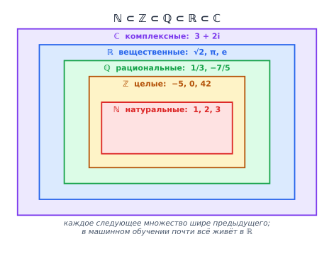
Числовые множества вложены друг в друга как матрёшки. Число $3$ лежит сразу во всех пяти коробках, $-5$ — в четырёх (начиная с $\mathbb{Z}$), $\pi$ — только в двух внешних. Обратите внимание: примеры внутри каждой коробки — это то новое, что она добавляет по сравнению с предыдущей. Каждое расширение появилось потому, что в старом множестве какая-то операция ломалась:
- Считаем яблоки: $1, 2, 3$ — хватает $\mathbb{N}$. Но $3 - 5$ уже не посчитать $\to$ появились отрицательные и ноль, то есть $\mathbb{Z}$.
- Делим пиццу на троих: $1 / 3$ — целым числом не выразить $\to$ появились дроби, то есть $\mathbb{Q}$.
- Измеряем диагональ квадрата со стороной 1: по теореме Пифагора это $\sqrt{2}$, а его невозможно записать в виде дроби $p/q$ (это доказанный факт) $\to$ появились иррациональные числа, вместе с рациональными они дают $\mathbb{R}$.
- Решаем уравнение $x^2 = -1$: на числовой прямой решений нет $\to$ ввели «мнимую единицу» $i$ с правилом $i^2 = -1$, и получилось $\mathbb{C}$.
Числа — это скаляры, то есть они задают величину без направления (в отличие от векторов, у которых направление есть — о них следующий вопрос). В прикладной математике обычно работаем с $\mathbb{R}$ или $\mathbb{C}$, но мы $99.9\%$ будем именно с вещественными работать.
Значок $\in$ читается «принадлежит» или «является элементом». Такая запись — это, по сути, объявление типа переменной, как
float xв коде.- $x \in \mathbb{R}$ — «$x$ — это какое-то вещественное число»: может быть отрицательным, дробным, иррациональным.
- $n \in \mathbb{N}$ — «$n$ — натуральное»: так обычно объявляют счётчики, номера объектов, размер выборки.
- $\vec{x} \in \mathbb{R}^n$ — «$\vec{x}$ — набор из $n$ вещественных чисел» (вектор длины $n$).
- $A \in \mathbb{R}^{m \times n}$ — «$A$ — таблица вещественных чисел из $m$ строк и $n$ столбцов» (матрица).
Верхний индекс здесь означает форму объекта, а не возведение в степень: $\mathbb{R}^{100}$ — это не «$\mathbb{R}$ в сотой степени», а «сто вещественных чисел подряд».
Признаки объектов (возраст, средний чек, яркость пикселя), веса модели, значения функции потерь, градиенты — всё это вещественные числа. Причина простая: методы обучения основаны на производных, а производную можно взять только у функции, определённой на непрерывном множестве. По целым числам «плавно» двигаться нельзя — некуда сделать маленький шаг.
Именно поэтому категориальные признаки («город», «цвет») сначала превращают в числа (one-hot, эмбеддинги), а уже потом отдают модели.
$\mathbb{R}$ — бесконечно точная математическая абстракция, а
float32/float64в компьютере — конечный набор примерно из $2^{32}$ или $2^{64}$ значений. Отсюда практические последствия, на которых новички регулярно спотыкаются:0.1 + 0.2 == 0.3даётFalse— в двоичной системе $0.1$ непредставима точно. Сравнивать вещественные числа надо черезabs(a - b) < 1e-9, а не через==.- В
float32числа больше $\approx 3.4 \cdot 10^{38}$ превращаются вinf, а начиная примерно с $10^{-38}$ и ниже стремительно теряют точность и в конце концов схлопываются в ноль. Отсюда классическиеNaNв лоссе при экспонентах и логарифмах. - Ассоциативность ломается:
(a + b) + cможет не совпасть сa + (b + c)в последнем знаке. Поэтому результат обучения на GPU не воспроизводится побитово.
Комплексные числа $\mathbb{C}$ в ML — редкий гость, но не экзотика: они лежат в основе преобразования Фурье, а значит, всей обработки звука (спектрограммы для распознавания речи), радиосигналов и части методов обработки изображений. Ещё они всплывают в теории: собственные числа несимметричной матрицы вполне могут оказаться комплексными — об этом будет разговор в вопросе про собственные значения.
- Входит ли ноль в $\mathbb{N}$ — вопрос соглашения: в российской традиции обычно не входит, в западной (и в информатике) чаще входит. Если это важно, пишут явно: $\mathbb{N}_0$ или $\mathbb{Z}_{\geq 0}$.
- Не всякая бесконечная дробь иррациональна: $1/3 = 0.333\dots$ бесконечна, но рациональна. Признак рациональности — дробь либо конечна, либо периодична.
- $\mathbb{R}_+$ или $\mathbb{R}_{>0}$ — только положительные вещественные; такое ограничение часто встречается в определениях норм, дисперсий и метрик.
Какие основные числовые множества существуют и в каком порядке они вложены?
$\mathbb{N} \subset \mathbb{Z} \subset \mathbb{Q} \subset \mathbb{R} \subset \mathbb{C}$ — натуральные, целые, рациональные, вещественные, комплексные. Каждое следующее множество содержит предыдущее целиком и добавляет числа, которых в нём не хватало.
Что такое скаляр? С каким числовым множеством работают в ML?
Скаляр — число без направления, просто величина (в противоположность вектору, у которого есть и величина, и направление). В ML работают практически всегда с $\mathbb{R}$ — вещественными числами, потому что методы обучения опираются на производные, а они требуют непрерывности.
Что означает запись $x \in \mathbb{R}$ и $A \in \mathbb{R}^{m \times n}$?
Значок $\in$ читается «принадлежит». $x \in \mathbb{R}$ — $x$ является вещественным числом; $A \in \mathbb{R}^{m \times n}$ — $A$ есть матрица из вещественных чисел размера $m$ строк на $n$ столбцов. Верхний индекс задаёт форму объекта, а не степень.
Чем вещественные числа отличаются от рациональных? Приведите пример.
Рациональные представимы в виде дроби $p/q$ с целыми $p, q$; вещественные включают ещё и иррациональные, которые так записать нельзя — $\sqrt{2}$, $\pi$, $e$. Признак рациональности десятичной записи: она либо конечна, либо периодична.
Почему
0.1 + 0.2 == 0.3в Python даётFalse?Потому что тип
float— это не $\mathbb{R}$, а конечное подмножество двоичных дробей. Число $0.1$ в двоичной системе непредставимо точно, поэтому накапливается ошибка округления. Сравнивать нужно с допуском:abs(a - b) < 1e-9.Зачем понадобились комплексные числа и встречаются ли они в ML?
Их ввели, чтобы уравнение $x^2 = -1$ имело решение: мнимая единица $i$ определяется правилом $i^2 = -1$. В ML они появляются в преобразовании Фурье (обработка звука и сигналов) и в собственных числах несимметричных матриц.
-
Операции над числами
Операции над числами:
Операция Обозначение Сложение $a + b$ Вычитание $a - b$ Умножение $a \cdot b$ Деление $a / b$ Возведение в степень $a ^ b$ Извлечение корня степени $b$ из числа $a$ $\sqrt[b]{a}$ — требуется найти число, которое возведённое в степень $b$ даёт $a$ Модуль — "отбрасывание знака" числа $|a|$ $$124 + 56 = 180$$ $$124 - 56 = 68$$ $$124 \cdot 56 = 6944$$ $$124 / 56 = 2.21428571429$$ $$124 ^ 3 = 124 \cdot 124 \cdot 124 = 1906624$$ $$\sqrt[3]{125} = 5$$ $$|124| = 124, \quad |-124| = 124$$
Полезно видеть не семь независимых операций, а три пары «действие — откат»:
- сложение $\leftrightarrow$ вычитание: $a + b - b = a$;
- умножение $\leftrightarrow$ деление: $a \cdot b / b = a$;
- возведение в степень $\leftrightarrow$ извлечение корня: $\sqrt[b]{a^b} = a$.
Именно так и появлялись новые числовые множества: чтобы «откат» работал всегда, а не через раз. Вычитание требует отрицательных чисел, деление — дробей, извлечение корня — иррациональных.
Запись $|a|$ означает «расстояние от числа $a$ до нуля на числовой прямой», а расстояние отрицательным не бывает — отсюда и «отбрасывание знака». Формально:
$$|a| = \begin{cases} a, & a \geq 0 \\ -a, & a < 0 \end{cases}$$
Это же понятие потом обобщится на векторы: длина вектора $\|\vec{x}\|$ — это ровно «расстояние от вектора до нуля», просто в многомерном пространстве.
Целая степень читается просто: $a^3 = a \cdot a \cdot a$. Но что такое $4^{1.3}$ или $2^{-1}$? Определения расширяют так, чтобы правила не ломались:
- $a^0 = 1$ — потому что $a^1 / a^1 = a^{1-1} = a^0$, а слева очевидная единица.
- $a^{-n} = \dfrac{1}{a^n}$ — минус в показателе означает «перевернуть дробь»: $2^{-3} = 1/8$.
- $a^{1/n} = \sqrt[n]{a}$ — корень это и есть дробная степень: $125^{1/3} = 5$.
- Отсюда $a^{1.3} = a^{13/10} = \sqrt[10]{a^{13}}$.
$$a^m \cdot a^n = a^{m+n}, \qquad \frac{a^m}{a^n} = a^{m-n}, \qquad (a^m)^n = a^{mn}$$
Они постоянно всплывают при разборе формул: например, именно из первого правила следует, что $e^{a} \cdot e^{b} = e^{a+b}$ — это ядро того, почему softmax инвариантен к сдвигу логитов.
Эти школьные операции — не «разминка перед настоящей математикой»: из них буквально собраны формулы, которые вы будете видеть каждый день.
- MSE (среднеквадратичная ошибка) — сложение, деление и квадрат: $\frac{1}{N}\sum (y_i - \hat{y}_i)^2$.
- MAE (средняя абсолютная ошибка) — модуль: $\frac{1}{N}\sum |y_i - \hat{y}_i|$.
- RMSE — корень из MSE, чтобы вернуть ошибку в единицы измерения целевой переменной.
- Learning rate decay — степень: $\alpha_t = \alpha_0 \cdot \gamma^{t}$, где $\gamma = 0.95$ уменьшает шаг обучения на 5% за эпоху.
- $L_2$-регуляризация — сумма квадратов весов $\sum w_i^2$; $L_1$ — сумма модулей $\sum |w_i|$.
Есть много других операций над числами, но они будут рассматриваться в разделе с математическим анализом: числа можно обрабатывать с помощью функций — отображать их по заданному правилу, например, $\sin(x), \cos(x), \tan(x), \log(x), \exp(x), \sqrt{x}, \frac{1}{x}, \dots$
Из них в ML особенно важны две: $\exp(x) = e^x$ и $\log(x)$ — они обратны друг другу и стоят внутри сигмоиды, softmax и кросс-энтропии.
- Модуль в квадрате. $|a|^2 = a^2$ всегда, а вот $\sqrt{a^2} = |a|$, а не $a$: $\sqrt{(-3)^2} = 3$, а не $-3$. Это регулярная ошибка при выводе формул.
- Порядок операций. $-2^2 = -4$, а $(-2)^2 = 4$: возведение в степень «сильнее» унарного минуса. В Python ровно то же самое:
-2**2даёт-4. - Корень чётной степени из отрицательного числа в $\mathbb{R}$ не существует: $\sqrt{-4}$ — не вещественное число. Отсюда
nanв коде, если под корень случайно попало отрицательное значение. - Деление на ноль не даёт ни бесконечности, ни нуля — оно просто не определено. В коде вместо этого пишут $\frac{a}{b + \varepsilon}$ с маленьким $\varepsilon \approx 10^{-8}$; такой $\varepsilon$ вы увидите почти в каждой реализации нормализации.
Перечислите основные операции над числами.
Сложение, вычитание, умножение, деление, возведение в степень ($a^b$), извлечение корня ($\sqrt[b]{a}$), модуль ($|a|$). Первые шесть образуют три пары «действие — обратное действие».
Что такое модуль числа? Чему равно $|-5|$ и $|5|$?
Модуль — расстояние от числа до нуля на числовой прямой, то есть отбрасывание знака. $|-5| = 5$, $|5| = 5$. В многомерном случае это понятие обобщается до длины (нормы) вектора.
Как связаны степень и корень?
Это взаимно обратные операции, а корень — просто дробная степень: $a^{1/n} = \sqrt[n]{a}$. Поэтому $\sqrt[b]{a^b} = a$, а $125^{1/3} = 5$.
Чему равно $a^0$ и $a^{-n}$ и почему?
$a^0 = 1$, потому что $a^n / a^n = a^{n-n} = a^0$, а слева стоит единица. $a^{-n} = 1/a^n$ — минус в показателе означает «перевернуть дробь». Оба определения выбраны так, чтобы правило $a^m \cdot a^n = a^{m+n}$ продолжало работать.
Чему равно $\sqrt{a^2}$?
$|a|$, а не $a$: $\sqrt{(-3)^2} = 3$. Корень чётной степени всегда возвращает неотрицательное значение.
Какие операции над числами изучаются в математическом анализе, а не здесь?
Функции: $\sin(x)$, $\cos(x)$, $\log(x)$, $\exp(x)$, $\sqrt{x}$ и т.д. В ML особенно важна пара $\exp$ / $\log$ — они стоят внутри сигмоиды, softmax и кросс-энтропии.
-
Векторы
Вектор — это упорядоченный набор чисел. Можно представить как точку в $n$-мерном пространстве или как направленный отрезок (стрелку).
$$\vec{x} = \begin{bmatrix} x_1 \\ x_2 \\ \vdots \\ x_n \end{bmatrix} \in \mathbb{R}^n$$
Если запись выше пока выглядит как иероглиф, вот её расшифровка:
- $\vec{x}$ (или просто жирное $\mathbf{x}$) — имя вектора; стрелка сверху нужна только чтобы отличать его от обычного числа.
- $x_1, x_2, \dots, x_n$ — компоненты (координаты) вектора, обычные числа. Нижний индекс — это номер, а не степень.
- $n$ — сколько чисел в наборе, это размерность вектора.
- $\in \mathbb{R}^n$ — «принадлежит множеству наборов из $n$ вещественных чисел».
Слово «упорядоченный» здесь принципиально: $(2, 5)$ и $(5, 2)$ — разные векторы, потому что первое число значит одно (скажем, возраст), а второе — другое (доход).
Вектор можно воспринимать двояко:
- Геометрически: стрелка в пространстве — имеет длину и направление.
- Алгебраически: упорядоченный набор чисел — строка или столбец.
Это не два разных объекта, а одна и та же вещь с двух сторон. Геометрический взгляд помогает придумывать («эти два эмбеддинга смотрят в одну сторону»), алгебраический — считать (сложить поэлементно). Хороший специалист свободно переключается между ними.
В ML вектор — это, как правило, описание одного объекта: набор всех его признаков. Например, один пользователь интернет-магазина может быть описан вектором из признаков: возраст, число покупок, средний чек, регион и т.д.
Конкретно:
$$\vec{u} = \begin{bmatrix} 34 \\ 12 \\ 2450 \\ 1 \end{bmatrix} \;\;\begin{matrix} \leftarrow \text{возраст} \\ \leftarrow \text{число покупок} \\ \leftarrow \text{средний чек} \\ \leftarrow \text{Москва (1) или нет (0)} \end{matrix}$$
Вся таблица клиентов — это уже матрица: строки-объекты, столбцы-признаки.
По умолчанию в математике вектор считают столбцом ($n \times 1$), а строку получают транспонированием: $\vec{x}^\top$. Из-за этого в формулах появляется $\mathbf{w}^\top \mathbf{x}$, а не $\mathbf{w}\mathbf{x}$ — иначе размерности не сойдутся при умножении.
В коде всё наоборот: в NumPy и PyTorch объекты чаще лежат строками (
X.shape == (n_objects, n_features)), и формула превращается вX @ w. Держать в голове обе конвенции полезно — большая часть ошибок «shapes do not match» растёт именно отсюда.Векторы складываются и умножаются на скаляры поэлементно:
$$\vec{x} + \vec{y} = \begin{bmatrix} x_1 + y_1 \\ x_2 + y_2 \\ \vdots \\ x_n + y_n \end{bmatrix}, \quad \lambda \vec{x} = \begin{bmatrix} \lambda x_1 \\ \lambda x_2 \\ \vdots \\ \lambda x_n \end{bmatrix}$$
Складывать можно только векторы одинаковой размерности; $\lambda$ (лямбда) — обычное число, скаляр.
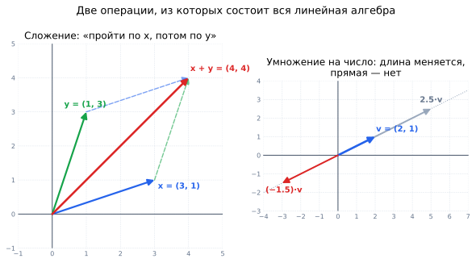
Слева: чтобы сложить два вектора, нужно приставить начало второго к концу первого — красная стрелка и есть сумма (пунктиром показано, что порядок не важен, получается параллелограмм). Справа: умножение на число не меняет прямую, вдоль которой лежит вектор, — меняется только длина, а отрицательный множитель разворачивает стрелку в противоположную сторону. - Сложение — «пройти по первому вектору, а затем от его конца пройти по второму». Если $\vec{x}$ — это «3 шага вправо, 1 вверх», а $\vec{y}$ — «1 вправо, 3 вверх», то вместе получится «4 вправо, 4 вверх». Смещения просто накапливаются по каждой оси независимо.
- Умножение на скаляр — «растянуть или сжать стрелку, не меняя направления прямой». Множитель $2$ удлиняет вдвое, $0.5$ укорачивает вдвое, $-1$ разворачивает на 180°.
Ключевое наблюдение: обе операции работают по каждой координате независимо. Никакого «перемешивания» осей здесь ещё нет — оно появится только с матрицами.
Пусть
$$\vec{x} = \begin{bmatrix} 2 \\ 4 \\ 8 \end{bmatrix}, \quad \vec{y} = \begin{bmatrix} 3 \\ 5 \\ 6 \end{bmatrix}$$
Тогда
$$\vec{x} + \vec{y} = \begin{bmatrix} 2 + 3 \\ 4 + 5 \\ 8 + 6 \end{bmatrix} = \begin{bmatrix} 5 \\ 9 \\ 14 \end{bmatrix}$$
$$5 \vec{x} = \begin{bmatrix} 5 \cdot 2 \\ 5 \cdot 4 \\ 5 \cdot 8 \end{bmatrix} = \begin{bmatrix} 10 \\ 20 \\ 40 \end{bmatrix}$$
Кажется, что складывать векторы — слишком просто, чтобы быть важным. Но шаг градиентного спуска — это ровно они:
$$\theta_{t+1} = \theta_t - \alpha \cdot \nabla L$$
Здесь $\theta_t$ — вектор всех весов модели (для нейросети это могут быть миллиарды чисел), $\nabla L$ — вектор градиента той же размерности, $\alpha$ — скаляр (learning rate). То есть каждый шаг обучения = «умножить вектор на число и вычесть из другого вектора». Всё обучение — это миллионы повторений этой операции.
- Вектор — не то же самое, что точка, но и не совсем другое. Стрелку можно нарисовать откуда угодно: важны только «сколько вправо и сколько вверх». Обычно её рисуют из начала координат — тогда конец стрелки и есть точка с теми же координатами.
- Складывать векторы разной размерности нельзя. В NumPy такая попытка иногда «проходит» из-за broadcasting и молча даёт матрицу вместо ошибки — проверяйте
.shape, если результат неожиданно вырос. - Умножить два вектора «поэлементно» — это не то же, что скалярное произведение.
x * yв NumPy даёт вектор той же длины (произведение Адамара), а скалярное произведение — одно число,x @ y. Путаница между ними — источник трудноуловимых багов. - Нижний индекс $x_2$ — это вторая координата одного вектора, а не второй объект выборки. Когда нужно и то и другое, пишут $x_i^{(j)}$: $i$ — признак, $j$ — номер объекта.
Links
Ресурс Описание Essence of linear algebra 3blue1bown / video / Eng и Rus(поменять звук дорожку) / 180 min Шикарный плейлист для интуитивного освоения базы линала и даже более (в контексте МЛ). Визуализации, по традиции канала, на высоком уровне. Что такое вектор? Как он обозначается?
Упорядоченный набор чисел фиксированной длины. Обозначается $\vec{x} \in \mathbb{R}^n$, где $n$ — размерность. Слово «упорядоченный» существенно: $(2,5)$ и $(5,2)$ — разные векторы.
Назовите два способа интерпретировать вектор.
Геометрически — стрелка, у которой есть длина и направление. Алгебраически — упорядоченный набор чисел (столбец или строка). Это один и тот же объект: геометрия помогает рассуждать, алгебра — считать.
Как складываются векторы и как умножаются на скаляр?
Поэлементно и независимо по каждой координате: $(x + y)_i = x_i + y_i$, $(\lambda x)_i = \lambda x_i$. Складывать можно только векторы одинаковой размерности. Геометрически сложение — «приставить начало второй стрелки к концу первой», умножение на скаляр — растяжение вдоль той же прямой.
Как вектор используется в ML?
Вектор описывает один объект выборки — набор всех его признаков (возраст, число покупок, средний чек и т.д.). Вся обучающая выборка тогда становится матрицей: строки — объекты, столбцы — признаки.
Почему в формулах пишут $\mathbf{w}^\top \mathbf{x}$, а не $\mathbf{w}\mathbf{x}$?
Потому что по математическому соглашению вектор — это столбец размера $n \times 1$. Чтобы получить из двух столбцов число, первый нужно транспонировать в строку: $(1 \times n) \cdot (n \times 1) = (1 \times 1)$.
Где сложение векторов и умножение на скаляр встречаются в обучении модели?
Это ровно шаг градиентного спуска: $\theta_{t+1} = \theta_t - \alpha \nabla L$. Градиент — вектор, learning rate — скаляр, обновление весов — вычитание векторов.
-
Скалярное произведение
Скалярное произведение (dot product):
$$\vec{x} \cdot \vec{y} = \sum_{i=1}^{n} x_i y_i$$
Обозначают также $\langle \vec{x}, \vec{y} \rangle$ или $\vec{x}^\top \vec{y}$ — это одно и то же.
Значок $\sum_{i=1}^{n}$ («сигма») означает «сложи всё, что справа, для $i$ от 1 до $n$». То есть рецепт такой: перемножь соответствующие координаты и всё сложи.
Главное, что здесь надо усвоить: на входе два вектора, а на выходе — одно число, скаляр. Отсюда и название. Это принципиально отличает скалярное произведение от поэлементного умножения, которое возвращает вектор.
Пусть
$$\vec{x} = \begin{bmatrix} 2 \\ 4 \\ 8 \end{bmatrix}, \quad \vec{y} = \begin{bmatrix} 3 \\ 5 \\ 6 \end{bmatrix}$$
Тогда
$$\vec{x} \cdot \vec{y} = 2 \cdot 3 + 4 \cdot 5 + 8 \cdot 6 = 6 + 20 + 48 = 74$$
Скалярное произведение имеет второе, геометрическое выражение:
$$\vec{x} \cdot \vec{y} = \|\vec{x}\|\,\|\vec{y}\|\cos\theta$$
где $\|\vec{x}\|$ — длина (норма) вектора, а $\theta$ — угол между векторами. Обе формулы дают одно и то же число, просто одна удобна для вычислений, а вторая — для понимания.
Из неё сразу читается знак результата, потому что длины всегда положительны и знак задаёт только косинус:
- $\vec{x} \cdot \vec{y} > 0$ — угол острый, векторы «смотрят» в похожую сторону;
- $= 0$ — векторы перпендикулярны (ортогональны);
- $< 0$ — угол тупой, направления противоположны.
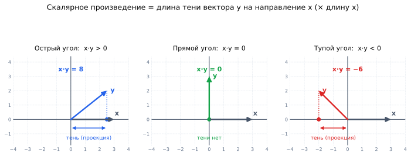
Скалярное произведение — это длина «тени» (проекции) вектора $y$ на направление $x$, умноженная на длину $x$. Слева тень положительна и результат положителен; в центре тени нет вовсе — векторы перпендикулярны и произведение равно нулю; справа тень падает в противоположную сторону, и результат отрицателен. Именно поэтому знак скалярного произведения отвечает на вопрос «векторы смотрят в одну сторону или в разные?». Представьте, что $x$ лежит на земле, а свет падает строго сверху. Тогда $\vec{x} \cdot \vec{y}$ пропорционально длине тени, которую отбрасывает $y$ на прямую $x$.
Отсюда мгновенно понятно, почему перпендикулярные векторы дают ноль: если $y$ стоит вертикально, тени у него нет. И почему нулевое скалярное произведение в ML читается как «эти два признака / эмбеддинга не имеют ничего общего».
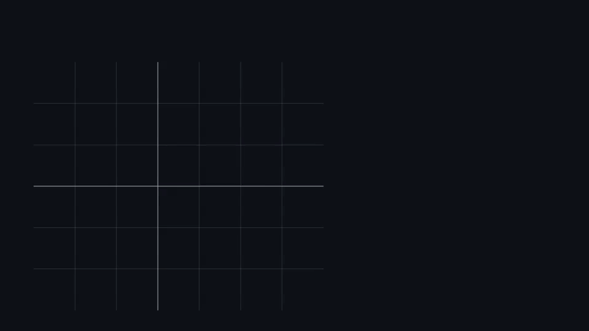
Вектор $b$ вращается вокруг $a$, жирный отрезок — проекция $b$ на направление $a$. При сонаправленных векторах проекция максимальна и $\langle a,b\rangle = |a||b|$; при $90^\circ$ проекции нет и произведение равно нулю; при тупом угле тень ложится в обратную сторону и произведение становится отрицательным. Скалярное произведение зависит и от угла, и от длин, а часто нужен только угол. Тогда произведение делят на длины обоих векторов:
$${\text{similarity}}=\cos(\theta )={A\cdot B \over \|A\|\|B\|} \in [-1, 1]$$
В знаменателе стоит норма вектора, это будет объяснено в разделе с мат. анализом; для наших целей достаточно знать, что $\|A\| = \sqrt{\sum a_i^2}$ — это длина стрелки.
Результат всегда лежит между $-1$ и $1$, и это делает его удобной шкалой похожести:
- $\approx 1$ — векторы почти сонаправлены: «очень похожи»;
- $\approx 0$ — перпендикулярны: «никак не связаны»;
- $\approx -1$ — противоположны: «противоположны по смыслу».
Деление на длины принципиально: без него длинный вектор побеждал бы просто за счёт масштаба. Например, длинный документ имел бы больше общих слов с чем угодно — и оказался бы «похож» на всё подряд.
Скалярное произведение полезно в машинном обучении: с помощью него можно мерить косинусную близость между эмбеддингами, например, чтобы искать по этим векторам похожие объекты.
Пусть карточки товаров закодированы векторами в $\mathbb{R}^{3}$ (в реальности размерность 256–1536, но принцип тот же):
$$\vec{a} = \begin{bmatrix} 0.9 \\ 0.1 \\ 0.4 \end{bmatrix} \text{ «беговые кроссовки»}, \quad \vec{b} = \begin{bmatrix} 0.8 \\ 0.2 \\ 0.5 \end{bmatrix} \text{ «кроссовки для зала»}, \quad \vec{c} = \begin{bmatrix} 0.1 \\ 0.9 \\ 0.2 \end{bmatrix} \text{ «кофеварка»}$$
Считаем: $\cos(\vec{a}, \vec{b}) \approx 0.98$, а $\cos(\vec{a}, \vec{c}) \approx 0.28$. Первым в выдаче «похожие товары» встанут кроссовки для зала — и никакой кофеварки. Ровно так работает семантический поиск и блок рекомендаций «с этим товаром смотрят».
Стоит один раз заметить, и вы начнёте видеть его повсюду:
- Линейная модель: предсказание $\hat{y} = \mathbf{w}^\top \mathbf{x}$ — это скалярное произведение весов на признаки.
- Один нейрон сети: $\sigma(\mathbf{w}^\top \mathbf{x} + b)$ — то же самое плюс сдвиг и нелинейность.
- Attention в трансформерах: веса внимания считаются как $\frac{QK^\top}{\sqrt{d}}$ — матрица всех попарных скалярных произведений «запросов» и «ключей».
- Векторные базы данных (FAISS, pgvector, Qdrant): поиск ближайших соседей — это поиск максимума скалярного произведения по миллионам векторов.
Отсюда практический вывод: скалярное произведение — самая горячая операция в ML, и именно её GPU умеют делать миллиардами в секунду.
- Косинусная близость — это не расстояние. У похожих объектов она велика (ближе к 1), а не мала. Если нужна именно метрика расстояния, берут $1 - \cos\theta$ — косинусное расстояние.
- Забыли нормировать. «Похожесть» через голое скалярное произведение зависит от длины векторов, и самый «популярный» (длинный) вектор окажется похож на всё. Либо делите на нормы, либо заранее нормируйте все эмбеддинги до единичной длины — тогда $\vec{x} \cdot \vec{y}$ уже равно косинусу.
- Путают с поэлементным умножением. В NumPy
x * y— это вектор, аx @ y(илиnp.dot) — число. Ошибка тихая: код не падает, но результаты бессмысленные. - Нулевой вектор. Косинус для него не определён — в знаменателе окажется ноль. В коде это вылезает как
nan; типичный источник — пустой текст, который эмбеддер закодировал нулями.
Как вычисляется скалярное произведение двух векторов?
$\vec{x} \cdot \vec{y} = \sum_{i=1}^n x_i y_i$ — перемножаем соответствующие координаты и складываем. На входе два вектора, на выходе одно число.
Каков геометрический смысл скалярного произведения?
$\vec{x} \cdot \vec{y} = \|\vec{x}\|\,\|\vec{y}\|\cos\theta$, где $\theta$ — угол между векторами. Это длина проекции («тени») одного вектора на направление другого, умноженная на длину второго.
Что означает знак скалярного произведения?
Знак задаётся только косинусом, так как длины положительны: больше нуля — угол острый, векторы сонаправлены; ноль — перпендикулярны; меньше нуля — угол тупой, направления противоположны.
Что такое косинусная близость и зачем делить на нормы?
$\cos\theta = \frac{A \cdot B}{\|A\|\|B\|} \in [-1, 1]$. Деление на длины убирает влияние масштаба, оставляя только угол, — иначе длинные векторы казались бы похожими на всё подряд. Используется для сравнения эмбеддингов: поиск похожих документов, слов, товаров.
Когда скалярное произведение равно нулю?
Когда векторы перпендикулярны ($\theta = 90°$) — либо когда один из них нулевой. В ML это читается как «между этими объектами нет ничего общего».
Где скалярное произведение встречается внутри моделей?
Предсказание линейной модели $\mathbf{w}^\top\mathbf{x}$, выход одного нейрона, матрица внимания $QK^\top$ в трансформерах, поиск ближайших соседей в векторных БД. Это самая частая операция в машинном обучении.
-
Матрицы
Матрица — это таблица чисел, упорядоченная в строки и столбцы. Пример матрицы размера $m \times n$:
$$A = \begin{bmatrix} a_{11} & a_{12} & \dots & a_{1n} \\ a_{21} & a_{22} & \dots & a_{2n} \\ \vdots & \vdots & \ddots & \vdots \\ a_{m1} & a_{m2} & \dots & a_{mn} \end{bmatrix} \in \mathbb{R}^{m \times n}$$
$a_{ij}$ — элемент на пересечении строки $i$ и столбца $j$, именно в таком порядке: сначала номер строки, потом номер столбца. Значит, $a_{23}$ стоит во второй строке и третьем столбце.
Размер $m \times n$ читается «$m$ на $n$» и тоже идёт «строки на столбцы». Матрица $3 \times 2$ — это три строки и два столбца, то есть «высокая и узкая».
Три точки ($\dots$, $\vdots$, $\ddots$) означают просто «и так далее» — по горизонтали, по вертикали и по диагонали соответственно. Никакой отдельной математики в них нет.
Если вектор описывал один объект, то матрица описывает всю таблицу данных: строка — объект, столбец — признак.
$$X = \begin{bmatrix} 34 & 12 & 2450 \\ 51 & 3 & 780 \\ 22 & 40 & 1600 \end{bmatrix} \;\; \begin{matrix} \leftarrow \text{клиент 1} \\ \leftarrow \text{клиент 2} \\ \leftarrow \text{клиент 3} \end{matrix}$$
Столбцы здесь — возраст, число покупок, средний чек. Именно этот объект вы передаёте в
model.fit(X, y), и его форма —X.shape == (n_objects, n_features).Матрицы можно:
- складывать (только если размеры совпадают — поэлементно, как векторы),
- умножать (если размерности согласованы: $A_{\textcolor{green}{m}\times \textcolor{red}{n}}\times B_{\textcolor{red}{n}\times \textcolor{blue}{k}} = C_{\textcolor{green}{m}\times \textcolor{blue}{k}}$),
- транспонировать ($A^\top$) — отразить относительно главной диагонали,
- находить определители (для квадратных),
- использовать для представления линейных преобразований.
Транспонирование меняет строки и столбцы местами: $(A^\top)_{ij} = A_{ji}$. Матрица $m \times n$ превращается в $n \times m$, элементы на главной диагонали остаются на месте:
$$\begin{bmatrix} a_{11} &\textcolor{green}{a_{12}} &\textcolor{green}{a_{13}}\\ \textcolor{magenta}{a_{21}} &a_{22} &\textcolor{red}{a_{23}}\\ \textcolor{magenta}{a_{31}} &\textcolor{blue}{a_{32}} &a_{33} \end{bmatrix}^\top = \begin{bmatrix} a_{11} &\textcolor{magenta}{a_{21}} &\textcolor{magenta}{a_{31}}\\ \textcolor{green}{a_{12}} &a_{22} &\textcolor{blue}{a_{32}}\\ \textcolor{green}{a_{13}} &\textcolor{red}{a_{23}} &a_{33} \end{bmatrix}$$
Проще всего запомнить так: строка $i$ становится столбцом $i$. Цвета выше показывают, какие элементы меняются местами.
Чтобы получить элемент $c_{ij}$ произведения $C = AB$, нужно взять строку $i$ матрицы $A$ и столбец $j$ матрицы $B$ и посчитать их скалярное произведение:
$$c_{ij} = \sum_{k=1}^{n} a_{ik} \, b_{kj}$$
Отсюда и требование согласованности: строка $A$ и столбец $B$ должны быть одной длины, то есть число столбцов $A$ равно числу строк $B$.
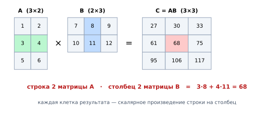
Одна клетка результата получается из одной строки левой матрицы и одного столбца правой: зелёная строка $(3, 4)$ и синий столбец $(8, 11)$ дают $3\cdot8 + 4\cdot11 = 68$ — красную клетку. Форма результата видна сразу: от $A$ берётся число строк, от $B$ — число столбцов, а «внутренние» размерности ($2$ и $2$) обязаны совпасть и в ответе исчезают. $$(m \times \textcolor{red}{n}) \cdot (\textcolor{red}{n} \times k) = (m \times k)$$
Внутренние размерности (красные) должны совпасть и «схлопываются»; внешние остаются и задают форму результата. Если внутренние не совпали — умножение просто не определено, и NumPy честно бросит
ValueError: shapes not aligned.Важно, что перемножение матриц некоммутативно: $AB\neq BA$.
Часто $BA$ вообще не существует (размерности не сходятся), а если существует — это может быть матрица другого размера, как в примере ниже. Даже для квадратных матриц одного размера результаты обычно различаются.
Интуиция: матрицы — это действия над пространством. «Повернуть, потом растянуть» и «растянуть, потом повернуть» дают разные картинки — как и в жизни «надеть носки, потом ботинки» ≠ «надеть ботинки, потом носки».
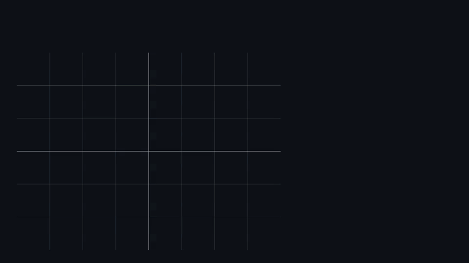
Одну и ту же фигуру сначала поворачиваем ($R$), потом растягиваем ($S$) — получаем $SR$. Затем наоборот: сначала растягиваем, потом поворачиваем — получаем $RS$. Фигуры не совпадают: умножение матриц — это последовательное применение преобразований, и порядок в общем случае менять нельзя. Пусть
$$A=\begin{bmatrix} 1 &2\\ 3 &4\\ 5 &6\\ \end{bmatrix}_{3\times 2}, \quad B=\begin{bmatrix} 7 &8 & 9\\ 10 &11 & 12\\ \end{bmatrix}_{2\times 3}$$
Тогда
$$AB = \begin{bmatrix} 27&30&33\\ 61&68&75\\ 95&106&117 \end{bmatrix}_{3\times 3}, \quad BA = \begin{bmatrix} 76&100\\ 103&136 \end{bmatrix}_{2\times 2}$$
Обратите внимание: не просто разные числа — разный размер. $(3\times2)(2\times3)$ даёт $3\times3$, а $(2\times3)(3\times2)$ даёт $2\times2$.
Рассмотрим $A, B$ из примера выше. Тогда
$$AB = \textcolor{green}{\begin{bmatrix} 1 &2\\ 3 &4\\ 5 &6\\ \end{bmatrix}_{3\times 2}}\textcolor{blue}{\begin{bmatrix} 7 &8 & 9\\ 10 &11 & 12\\ \end{bmatrix}_{2\times 3}}=\begin{bmatrix} \textcolor{green}{1}\cdot \textcolor{blue}{7} + \textcolor{green}{2}\cdot \textcolor{blue}{10} & \textcolor{green}{1}\cdot \textcolor{blue}{8} + \textcolor{green}{2}\cdot \textcolor{blue}{11} & \textcolor{green}{1}\cdot \textcolor{blue}{9} + \textcolor{green}{2} \cdot \textcolor{blue}{12}&\\ \textcolor{green}{3}\cdot \textcolor{blue}{7} + \textcolor{green}{4}\cdot \textcolor{blue}{10} & \textcolor{green}{3}\cdot \textcolor{blue}{8} + \textcolor{green}{4}\cdot \textcolor{blue}{11} & \textcolor{green}{3}\cdot \textcolor{blue}{9} + \textcolor{green}{4} \cdot \textcolor{blue}{12}&\\ \textcolor{green}{5}\cdot \textcolor{blue}{7} + \textcolor{green}{6}\cdot \textcolor{blue}{10} & \textcolor{green}{5}\cdot \textcolor{blue}{8} + \textcolor{green}{6}\cdot \textcolor{blue}{11} & \textcolor{green}{5}\cdot \textcolor{blue}{9} + \textcolor{green}{6} \cdot \textcolor{blue}{12}&\\ \end{bmatrix}_{3\times 3}$$
Попробуй отыскать здесь закономерность — именно по ней перемножаются любые матрицы.
Подсказка: посмотрите, из каких чисел собрана клетка во второй строке и третьем столбце. Зелёные числа взяты только из второй строки $A$, синие — только из третьего столбца $B$. Это и есть общее правило $c_{ij} = \sum_k a_{ik} b_{kj}$.
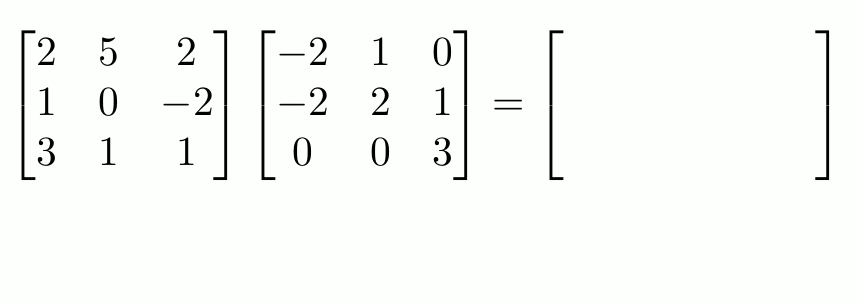
Визуализация умножения матриц Самое важное про матрицы понимается не сразу. Матрица $A$ размера $m \times n$ — это функция, которая берёт вектор из $\mathbb{R}^n$ и возвращает вектор из $\mathbb{R}^m$:
$$\vec{y} = A\vec{x}$$
Такие функции называются линейными преобразованиями: они умеют поворачивать, растягивать, сжимать, отражать и проецировать пространство, но не умеют его «гнуть» — прямые остаются прямыми, а начало координат остаётся на месте.
Отсюда следует главное: умножение матриц — это композиция действий. Запись $BA\vec{x}$ означает «сначала применили $A$, потом $B$». Именно поэтому порядок важен и поэтому нейросеть — это цепочка матричных умножений с нелинейностями между ними.
Слой
nn.Linear(in_features=784, out_features=128)в PyTorch хранит матрицу $W \in \mathbb{R}^{128 \times 784}$ и вектор сдвига $b \in \mathbb{R}^{128}$, а считает$$\vec{h} = W\vec{x} + \vec{b}$$
Для батча из 64 картинок MNIST это разворачивается в умножение $X_{64 \times 784} \cdot W^\top_{784 \times 128} = H_{64 \times 128}$: за одну операцию обрабатываются все 64 объекта сразу. Именно ради таких «пачек» и нужны GPU — они умеют перемножать большие матрицы тысячами параллельных потоков.
- Путают $m \times n$ с $n \times m$. Всегда «строки на столбцы». Половина ошибок несовпадения размерностей — это перепутанный порядок.
- Забывают транспонировать. В математике объект — столбец и пишут $W\vec{x}$; в коде объекты лежат строками, и то же самое выражается как
X @ W.T. Не переносите формулу в код буквально, сверяйтесь с.shape. - Считают, что $AB = BA$. Не равно почти никогда. Из этого же следует, что $(AB)^\top = B^\top A^\top$ — порядок переворачивается.
- Путают
A * BиA @ Bв NumPy. Первое — поэлементное умножение (требует одинаковых форм), второе — настоящее матричное. Оба могут не упасть с ошибкой и дать бессмысленный результат.
Что такое матрица? Как обозначается матрица размера $m \times n$?
Таблица чисел, упорядоченная в строки и столбцы: $A \in \mathbb{R}^{m \times n}$, где $m$ — число строк, $n$ — число столбцов. Элемент $a_{ij}$ стоит в строке $i$ и столбце $j$.
Когда можно перемножить матрицы $A$ и $B$? Каков размер результата?
Число столбцов $A$ должно совпадать с числом строк $B$: $A_{m \times k} \cdot B_{k \times n} = C_{m \times n}$. Внутренние размерности схлопываются, внешние задают форму результата.
Как вычисляется отдельный элемент произведения?
$c_{ij} = \sum_{k} a_{ik} b_{kj}$ — это скалярное произведение $i$-й строки матрицы $A$ и $j$-го столбца матрицы $B$.
Является ли умножение матриц коммутативным? Почему?
Нет: $AB \neq BA$ в общем случае, а часто $BA$ вообще не определено. Матрица — это действие над пространством, а порядок действий важен: «повернуть, потом растянуть» не то же, что «растянуть, потом повернуть».
Что такое транспонирование матрицы?
Замена строк и столбцов местами: $(A^\top)_{ij} = A_{ji}$; матрица $m \times n$ становится $n \times m$. Полезное свойство: $(AB)^\top = B^\top A^\top$ — порядок множителей переворачивается.
Что означает запись $\vec{y} = A\vec{x}$ геометрически?
Матрица действует как линейное преобразование: берёт вектор из $\mathbb{R}^n$ и возвращает вектор из $\mathbb{R}^m$, поворачивая, растягивая, отражая или проецируя пространство. Прямые при этом остаются прямыми, а начало координат — на месте.
Где матричное умножение встречается в нейросетях?
Полносвязный слой — это ровно $\vec{h} = W\vec{x} + \vec{b}$. Для батча объектов это одно большое матричное умножение, и именно эта операция составляет основную часть вычислений при обучении.
-
Тензоры
Тензор — это обобщение понятий скаляра (0-го порядка), вектора (1-го порядка) и матрицы (2-го порядка) на многомерные массивы данных. Тензор порядка $k$ — это многомерная структура размерности $k$.
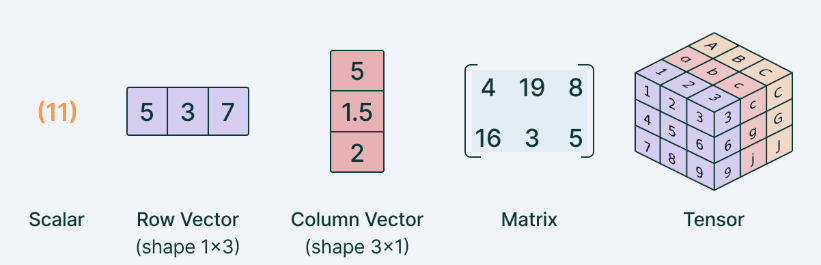
Тензоры Не нужно думать, что тензор — это что-то принципиально новое. Это просто числа, разложенные по «полочкам», и вопрос лишь в том, сколько раз пришлось вкладывать полочки друг в друга.
- Одно число — полочек нет вообще.
- Ряд чисел — одна ось (влево-вправо).
- Таблица — две оси (строки и столбцы).
- Стопка таблиц — три оси. И так далее.
Порядок (его же называют рангом или числом измерений) — это и есть количество осей, то есть сколько индексов нужно назвать, чтобы добраться до конкретного числа. В матрице их два: $a_{ij}$. В тензоре 4-го порядка — четыре: $t_{ijkl}$.
- Скаляр: $x \in \mathbb{R}$ — тензор порядка 0
- Вектор: $\vec{x} \in \mathbb{R}^n$ — тензор порядка 1
- Матрица: $A \in \mathbb{R}^{m \times n}$ — тензор порядка 2
- Тензор 3-го порядка: $T \in \mathbb{R}^{n_1 \times n_2 \times n_3}$
Их постоянно путают, а разница простая:
- Порядок (число осей) — сколько индексов нужно. У тензора $[64, 3, 128, 128]$ порядок равен 4.
- Размерность по оси — сколько элементов вдоль конкретной оси: 64, 3, 128, 128.
- Общее число элементов — произведение всех размерностей: $64 \cdot 3 \cdot 128 \cdot 128 = 3\,145\,728$ чисел.
Фраза «тензор размерности 4» почти всегда означает «4 оси», а не «4 числа».
Если мы обучаем нейросеть классифицировать кошек и собак по картинкам, то на вход на каждой итерации обучения нейросеть получает, как правило, батч (пакет) данных, который состоит из определенного числа картинок. Пусть размер батча равен 64, а RGB картинки имеют размер $128\times 128$. Тогда на каждой итерации на вход нейросетки подаются тензоры, которые имеют форму $[64, 3, 128, 128]$ — тензор 4-го порядка, или четырехмерный тензор: 64 — размер батча, 3 — кол-во цветовых каналов (потому что RGB), 128 — под ширину и высоту.
Изображения кошек и собак Строка
x.shape == torch.Size([64, 3, 128, 128])расшифровывается по позициям:[batch, channels, height, width], сокращённо NCHW. Чтобы достать красный канал седьмой картинки, пишутx[6, 0]— получится матрица $128 \times 128$.Но порядок осей — это соглашение, а не закон природы, и фреймворки договорились по-разному:
- PyTorch по умолчанию
NCHW(канал перед пространственными осями); - TensorFlow / Keras по умолчанию
NHWC(канал последним); - библиотеки для картинок (PIL, OpenCV, matplotlib) отдают
HWC.
Отсюда самый частый баг новичка: картинка загружена как $128\times128\times3$, а слой ждёт $3\times128\times128$. Лечится вызовом
permute/transpose, а не переписыванием модели.Форма тензора почти всегда читается как «сначала батч, потом смысловые оси»:
Данные Форма Что означают оси Табличные данные [N, F]объекты, признаки Текст в трансформере [B, L, D]батч, длина последовательности, размер эмбеддинга Картинки (PyTorch) [B, C, H, W]батч, каналы, высота, ширина Видео [B, T, C, H, W]батч, кадры, каналы, высота, ширина Аудио-спектрограмма [B, C, F, T]батч, каналы, частоты, время Небольшая, но полезная оговорка. В машинном обучении «тензор» — это просто многомерный массив чисел, синоним
ndarray. В физике и дифференциальной геометрии тензор — объект с дополнительным требованием: его компоненты должны определённым образом преобразовываться при смене системы координат.Если на собеседовании спросят «а это настоящий тензор?» — речь именно об этом различии. В контексте ML корректный ответ: мы используем слово в смысле «многомерный массив», и этого достаточно.
Причина сугубо практическая — скорость. Тензор лежит в памяти одним непрерывным блоком, а операции над ним выполняются одной командой сразу для всех элементов (векторизация), причём на GPU — тысячами параллельных потоков.
Отсюда правило, которое отличает рабочий ML-код от учебного: циклы по объектам батча — это почти всегда ошибка. Вместо
for i in range(64): out[i] = layer(x[i])пишутout = layer(x)— тот же результат, но в десятки раз быстрее.- Перепутанные оси.
[B, C, H, W]против[B, H, W, C]— код не упадёт, если размеры случайно совпали (например, $3 \times 3$), а модель будет молча учиться на мусоре. - Потерянная ось батча. Модель почти всегда ждёт 4 оси, а одна картинка — это 3. Нужен
x.unsqueeze(0), иначе получите ошибку размерности либо, что хуже, неверную интерпретацию. reshapeвместоpermute.reshapeпереставляет числа в памяти по порядку,permuteменяет смысл осей. Для переводаHWC$\to$CHWнужен именноpermute;reshapeдаст перемешанные пиксели без всякой ошибки.- Память растёт как произведение. Увеличили размер картинки вдвое — тензор вырос вчетверо. Именно так и возникает
CUDA out of memory: чаще всего лечится уменьшением батча, а не покупкой видеокарты.
Что такое тензор? Что означает его порядок (ранг)?
Многомерный массив данных — обобщение скаляра, вектора и матрицы. Порядок равен числу осей, то есть количеству индексов, нужных, чтобы указать на конкретный элемент.
Каков порядок тензора для скаляра, вектора и матрицы?
Скаляр — 0-й порядок, вектор — 1-й, матрица — 2-й. Дальше идут тензоры 3-го порядка (стопка матриц), 4-го (батч картинок) и выше.
Чем порядок тензора отличается от размерностей по осям?
Порядок — сколько осей всего; размерность по оси — сколько элементов вдоль неё. У тензора формы $[64, 3, 128, 128]$ порядок равен 4, а размерности по осям — 64, 3, 128 и 128; всего в нём $64 \cdot 3 \cdot 128 \cdot 128$ чисел.
Зачем тензоры нужны в нейросетях?
Изображения, текст, аудио, видео — многомерные структуры, и тензор даёт для них единый формат. Плюс он лежит в памяти непрерывно, что позволяет выполнять операции векторизованно и параллельно на GPU.
Что означает форма $[64, 3, 128, 128]$?
Батч из 64 RGB-изображений размера $128 \times 128$: оси идут как
[batch, channels, height, width](соглашение NCHW, принятое в PyTorch). В TensorFlow по умолчанию используется NHWC — канал стоит последним.Чем «тензор» в ML отличается от тензора в физике?
В ML это просто многомерный массив чисел. В физике и дифференциальной геометрии от тензора дополнительно требуют определённого закона преобразования компонент при смене системы координат.
-
Векторные пространства
Векторное пространство — множество $V$ с операциями сложения векторов и умножения на скаляр. Рассмотрим произвольные векторы $u, v, w \in V$ и скаляр $\alpha \in \mathbb{R}$. Векторное пространство удовлетворяет аксиомам:
- Коммутативность: $u + v = v + u$
- Ассоциативность: $(u + v) + w = u + (v + w)$
- Существование нейтрального элемента: $u + 0 = u$
- Дистрибутивность: $\alpha(u + v) = \alpha u + \alpha v$
Слово «аксиома» звучит грозно, но означает всего лишь правило, которое обязано выполняться. Расшифруем каждое бытовым языком:
- Коммутативность — «от перестановки слагаемых сумма не меняется»: пройти сначала на север, потом на восток — то же, что наоборот.
- Ассоциативность — «скобки не важны»: складывая три вектора, можно начать с любой пары.
- Нейтральный элемент — существует нулевой вектор $\vec{0}$ (все координаты нули), прибавление которого ничего не меняет. Это аналог числа 0.
- Дистрибутивность — «растянуть сумму = растянуть каждое слагаемое и сложить».
Смысл всего списка один: в векторном пространстве работает привычная школьная арифметика, только вместо чисел — векторы.
Все эти свойства говорят о том, что в векторном пространстве вектора можно спокойно складывать между собой и умножать на скаляры (числа), не думая о правилах. В математике есть специальные пространства, где какие-то из условий либо отсутствуют, либо не выполняются. Векторное пространство очень удобное и часто используется в математике, потому что оно даёт все возможности для работы с векторами.
Практический смысл такой: доказав теорему «для любого векторного пространства», её автоматически получают для $\mathbb{R}^2$, для $\mathbb{R}^{768}$, для пространства многочленов и для пространства функций — сразу для всех. Это экономия труда, а не бюрократия.
В строгом курсе линейной алгебры список длиннее: к перечисленным добавляются существование противоположного вектора ($u + (-u) = \vec{0}$), $1 \cdot u = u$, $\alpha(\beta u) = (\alpha\beta)u$ и $(\alpha + \beta)u = \alpha u + \beta u$.
На собеседовании обычно достаточно назвать смысл («замкнутость относительно сложения и умножения на скаляр плюс привычные арифметические правила») и пару-тройку аксиом. Заучивать все восемь наизусть — редко нужно.
Векторное пространство — это не обязательно «стрелки на плоскости». Вот совсем разные объекты, которые все являются векторными пространствами:
- $\mathbb{R}^n$ — привычные наборы из $n$ чисел; самый частый случай.
- Матрицы $\mathbb{R}^{m \times n}$ — их тоже можно складывать и умножать на число. Значит, все веса нейросети вместе — это точка одного огромного векторного пространства.
- Многочлены степени не выше $n$: $a_0 + a_1x + \dots + a_nx^n$. Сложить два многочлена и умножить на число — снова многочлен той же степени.
- Функции на отрезке: $(f + g)(x) = f(x) + g(x)$. На этом стоит вся теория рядов Фурье.
В модели Word2Vec каждому слову сопоставляется вектор в $\mathbb{R}^{n}$, обычно $n=300$. Семантические отношения отражаются векторными операциями:
$$\text{king} - \text{man} + \text{woman} \approx \text{queen}$$
Читается это так: «взять вектор король, вычесть из него всё, что связано с мужчиной, добавить всё, что связано с женщиной» — и ближайшим соседом результата окажется вектор королева.
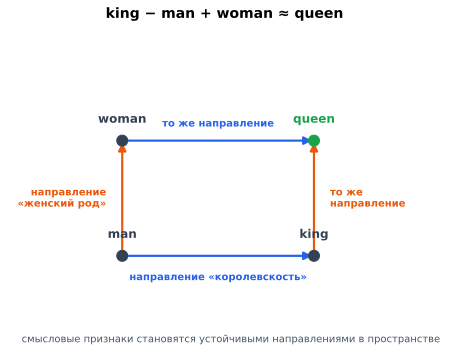
Четыре слова образуют почти идеальный параллелограмм. Синие стрелки — одно и то же смещение «королевскость», оранжевые — одно и то же смещение «женский род». Раз обе пары связаны одинаковыми сдвигами, вектор queen достижим сложением и вычитанием остальных трёх. Смысловой признак здесь — не координата, а направление в пространстве, и именно поэтому аналогии выражаются арифметикой векторов. Это демонстрирует, что смысловые аналогии кодируются линейными структурами в векторном пространстве. Но глубже мысль вот в чём: аксиомы векторного пространства оказались достаточным языком для того, чтобы говорить о смысле.
Никто не программировал правило «королева = король женского рода». Модель просто разместила слова в $\mathbb{R}^{300}$ так, чтобы соседи по контексту оказались рядом — и разница «мужское/женское» сама выделилась в отдельное направление, одинаковое для пар король/королева, актёр/актриса, дядя/тётя.
Ровно на этом стоят все современные эмбеддинги: смысл кодируется направлениями в пространстве, а операции над смыслом — сложением и вычитанием векторов.
- «Векторное пространство» — это не сами векторы, а множество вместе с операциями. Тот же набор объектов с другими правилами сложения может пространством и не быть.
- Ноль обязателен. Любое векторное пространство содержит нулевой вектор. Поэтому, например, множество векторов с положительными координатами пространством не является — в нём нет нуля и нет противоположных элементов.
- Аналогия $\text{king} - \text{man} + \text{woman}$ работает не всегда. На практике это скорее удачная демонстрация, чем надёжное свойство: часть аналогий воспроизводится, часть нет, а результат сильно зависит от корпуса и от того, исключается ли из выдачи само исходное слово.
- Не путайте с метрикой. В голом векторном пространстве нет ни длин, ни углов — только сложение и растяжение. Чтобы появились расстояния и косинусная близость, нужна дополнительная структура: скалярное произведение (тогда пространство называется евклидовым).
Что такое векторное пространство? Какие аксиомы оно должно выполнять?
Множество $V$ с операциями сложения векторов и умножения на скаляр, замкнутое относительно них и удовлетворяющее набору аксиом: коммутативность и ассоциативность сложения, существование нулевого и противоположного элементов, дистрибутивность и согласованность умножения на скаляр.
Что означают эти аксиомы простыми словами?
Что в пространстве работает привычная арифметика: слагаемые можно переставлять, скобки не важны, есть нейтральный ноль, а растяжение суммы равно сумме растяжений. Благодаря этому с векторами можно работать, не задумываясь о правилах.
Приведите примеры векторных пространств, кроме $\mathbb{R}^n$.
Матрицы фиксированного размера, многочлены степени не выше $n$, функции на отрезке. Все они складываются и умножаются на число по тем же правилам.
Почему понятие векторного пространства важно в ML?
Признаки объектов, эмбеддинги и параметры моделей — это векторы в некотором пространстве. Аксиомы гарантируют, что над ними корректно определены сложение и масштабирование, а значит, работают градиентный спуск, усреднение эмбеддингов и арифметика над представлениями.
Что означает операция $\text{king} - \text{man} + \text{woman} \approx \text{queen}$ в Word2Vec?
Что семантические отношения кодируются линейными операциями: слова — это векторы, а смысловые признаки («пол», «множественное число») выделяются как устойчивые направления в пространстве. Никто не задавал это правило вручную — оно возникло из обучения на контекстах.
Есть ли в векторном пространстве расстояния и углы?
Сами по себе — нет: аксиомы дают только сложение и умножение на скаляр. Длины и углы появляются, когда дополнительно вводится скалярное произведение; такое пространство называют евклидовым.
-
Линейная комбинация
Пусть заданы векторы $\vec{v}_1, \vec{v}_2, \dots, \vec{v}_k \in \mathbb{R}^n$ и скаляры (коэффициенты) $\alpha_1, \alpha_2, \dots, \alpha_k \in \mathbb{R}$. Тогда выражение:
$$\vec{u} = \alpha_1 \vec{v}_1 + \alpha_2 \vec{v}_2 + \dots + \alpha_k \vec{v}_k = \sum_{i=1}^{k} \alpha_i \vec{v}_i$$
называется линейной комбинацией векторов $\vec{v}_1, \dots, \vec{v}_k$.
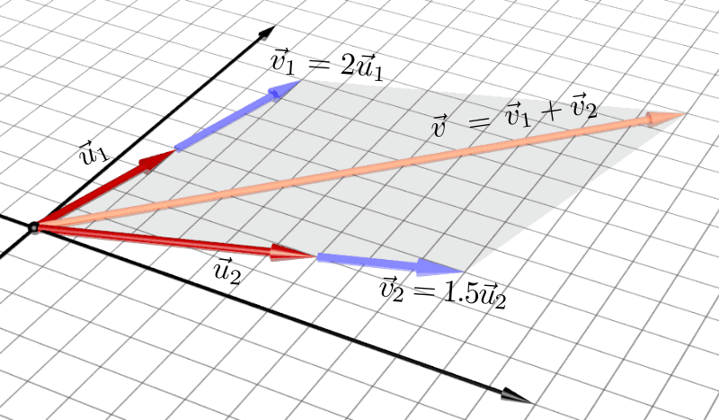
Линейная комбинация Линейная комбинация — это рецепт: «возьми столько-то первого вектора, столько-то второго, сложи».
Слово «линейная» здесь означает, что векторы разрешено только растягивать и складывать — ничего другого (возводить в квадрат, перемножать между собой, брать синус) делать нельзя. Коэффициенты $\alpha_i$ — это «сколько ложек» каждого вектора кладём в смесь; они могут быть любыми вещественными числами, в том числе нулевыми и отрицательными.
Геометрически это означает, что вектор $\vec{u}$ "собран" из других векторов путём масштабирования и сложения.
Все возможные линейные комбинации векторов $\vec{v}_1, \dots, \vec{v}_k$ образуют линейную оболочку этих векторов:
$$\operatorname{span}\{\vec{v}_1, \dots, \vec{v}_k\} = \left\{ \sum_{i=1}^{k}\alpha_i \vec{v}_i \;\middle|\; \alpha_i \in \mathbb{R} \right\}$$
Простыми словами: всё, что вообще можно собрать из этих векторов, если разрешено их растягивать и складывать. Фигурные скобки с чертой читаются как «множество таких сумм, где коэффициенты — любые вещественные числа».
- Оболочка одного ненулевого вектора — прямая, проходящая через начало координат: растягивая одну стрелку, вы никогда не сойдёте с её направления.
- Оболочка двух непараллельных векторов на плоскости — вся плоскость.
- Оболочка двух параллельных векторов — всё та же прямая: второй вектор не добавил ничего нового.
- Оболочка трёх векторов в $\mathbb{R}^3$, не лежащих в одной плоскости, — всё трёхмерное пространство.
Обратите внимание на закономерность: важно не количество векторов, а сколько среди них действительно разных направлений. Это наблюдение и приведёт нас к понятиям линейной независимости и ранга.
Пусть $\vec{v}_1 = \begin{bmatrix} 1 \\ 0 \end{bmatrix}$, $\vec{v}_2 = \begin{bmatrix} 0 \\ 1 \end{bmatrix}$ (стандартный базис $\mathbb{R}^2$). Тогда любой вектор плоскости — линейная комбинация:
$$\begin{bmatrix} 3 \\ -2 \end{bmatrix} = 3 \cdot \begin{bmatrix} 1 \\ 0 \end{bmatrix} + (-2) \cdot \begin{bmatrix} 0 \\ 1 \end{bmatrix}$$
То есть «три шага вправо и два шага вниз». Коэффициенты $3$ и $-2$ — это ровно координаты вектора: координаты и есть коэффициенты линейной комбинации базисных векторов.
Возьмём теперь $\vec{v}_1 = \begin{bmatrix} 2 \\ 1 \end{bmatrix}$, $\vec{v}_2 = \begin{bmatrix} 1 \\ 3 \end{bmatrix}$ и попробуем собрать из них $\vec{u} = \begin{bmatrix} 5 \\ 5 \end{bmatrix}$. Нужно решить систему:
$$\begin{cases} 2\alpha_1 + 1\alpha_2 = 5 \\ 1\alpha_1 + 3\alpha_2 = 5 \end{cases}$$
Из первого уравнения $\alpha_2 = 5 - 2\alpha_1$; подставляем во второе: $\alpha_1 + 15 - 6\alpha_1 = 5$, откуда $\alpha_1 = 2$, $\alpha_2 = 1$. Проверяем:
$$2\begin{bmatrix} 2 \\ 1 \end{bmatrix} + 1\begin{bmatrix} 1 \\ 3 \end{bmatrix} = \begin{bmatrix} 4 + 1 \\ 2 + 3 \end{bmatrix} = \begin{bmatrix} 5 \\ 5 \end{bmatrix} \;\checkmark$$
Важный вывод: «разложить вектор по другим векторам» = решить систему линейных уравнений. Это одна и та же задача, записанная двумя способами.
В ML признаки объектов можно рассматривать как векторы, а предсказание линейной модели — как линейную комбинацию признаков:
$$\hat{y} = w_1 x_1 + w_2 x_2 + \dots + w_d x_d = \mathbf{w}^\top \mathbf{x}$$
Коэффициенты $w_i$ — это "веса" в линейной комбинации, обучаемые моделью. Вся логика линейной регрессии и большинства нейронных слоёв — это именно вычисление линейных комбинаций.
Тут стоит остановиться, потому что формула $\hat{y} = \sum_i w_i x_i$ читается двумя способами, и оба полезны:
- Комбинируем признаки одного объекта. Веса $w_i$ говорят, насколько каждый признак влияет на ответ: «каждый год возраста добавляет 0.3 к скору, каждая просрочка вычитает 5».
- Комбинируем столбцы матрицы. Для всей выборки $\hat{\mathbf{y}} = X\mathbf{w}$ — это линейная комбинация столбцов матрицы $X$ с коэффициентами $\mathbf{w}$.
Второй взгляд менее очевиден, но именно он объясняет главное ограничение линейной регрессии: вектор предсказаний обязан лежать в линейной оболочке столбцов $X$. Если настоящая зависимость из этой оболочки не собирается — никакие веса не помогут, и нужны новые признаки.
- Ансамбли моделей: блендинг $\hat{y} = 0.4\hat{y}_{\text{cat}} + 0.35\hat{y}_{\text{lgbm}} + 0.25\hat{y}_{\text{nn}}$ — линейная комбинация предсказаний.
- Скользящее среднее и EMA сглаживают ряд линейной комбинацией прошлых значений.
- Attention в трансформере: выход — линейная комбинация векторов $V$ с коэффициентами, которые сами вычислены из данных.
- PCA: каждая главная компонента — линейная комбинация исходных признаков.
- Mixup (аугментация данных): новый объект получают как $\lambda x_i + (1-\lambda)x_j$ — буквально линейная комбинация двух картинок.
- Коэффициенты могут быть отрицательными и нулевыми. Линейная комбинация — это не «смесь в пропорциях» и не среднее: сумма коэффициентов ничем не ограничена. Если дополнительно потребовать $\alpha_i \geq 0$ и $\sum \alpha_i = 1$, получится другое (более узкое) понятие — выпуклая комбинация.
- Линейная оболочка всегда содержит ноль. Достаточно взять все $\alpha_i = 0$. Поэтому span никогда не бывает «прямой, не проходящей через начало координат».
- Больше векторов ≠ больше оболочка. Добавление вектора, который сам является комбинацией имеющихся, не расширяет span ни на йоту.
- «Линейная» не значит «простая». Линейность запрещает только произведения и функции от переменных. Если добавить признак $x^2$ как отдельный столбец, модель $\hat{y} = w_1x + w_2x^2$ остаётся линейной по весам — и именно поэтому полиномиальная регрессия обучается теми же методами.
Что такое линейная комбинация векторов?
$\vec{u} = \sum_{i=1}^k \alpha_i \vec{v}_i$ — взвешенная сумма векторов с произвольными коэффициентами $\alpha_i \in \mathbb{R}$. Векторы разрешено только растягивать и складывать; коэффициенты могут быть отрицательными и нулевыми.
Что такое линейная оболочка $\operatorname{span}\{\vec{v}_1, \dots, \vec{v}_k\}$?
Множество всех возможных линейных комбинаций данных векторов — то есть всё, что вообще можно из них собрать. Оболочка одного ненулевого вектора — прямая через ноль, двух непараллельных на плоскости — вся плоскость.
Почему линейная оболочка всегда содержит нулевой вектор?
Потому что можно взять все коэффициенты нулевыми. Отсюда следует, что span — это всегда подпространство, проходящее через начало координат.
Как связаны «разложить вектор по другим векторам» и система линейных уравнений?
Это одна и та же задача: поиск коэффициентов $\alpha_i$ в разложении $\vec{u} = \sum \alpha_i \vec{v}_i$ равносилен решению системы, где неизвестные — коэффициенты, а столбцы матрицы — векторы $\vec{v}_i$.
Как предсказание линейной модели связано с линейной комбинацией?
$\hat{y} = w_1 x_1 + \dots + w_d x_d = \mathbf{w}^\top \mathbf{x}$ — это линейная комбинация признаков $x_i$ с весами $w_i$. Для всей выборки $\hat{\mathbf{y}} = X\mathbf{w}$ — линейная комбинация столбцов матрицы объектов.
Что обучают в линейной регрессии с точки зрения линейных комбинаций?
Обучают коэффициенты (веса) $w_i$ — вклад каждого признака в предсказание. При этом вектор предсказаний обязан лежать в линейной оболочке столбцов $X$: если нужная зависимость из неё не собирается, помогут только новые признаки, а не подбор весов.
Остаётся ли модель линейной, если добавить признак $x^2$?
Да — линейность понимается относительно весов, а не признаков. Модель $\hat{y} = w_1x + w_2x^2$ линейна по $w$, поэтому обучается теми же методами; так и устроена полиномиальная регрессия.
-
Базис и размерность
Базис — максимальный набор линейно независимых векторов $e_i\colon (e_1,\dots, e_n)$.
Слово «максимальный» здесь работает как ограничитель с двух сторон, и именно в этом вся суть:
- векторов должно быть достаточно, чтобы из них собиралась любая точка пространства (набор порождает пространство);
- и при этом ни одного лишнего — ни один вектор нельзя выразить через остальные.
Бытовая аналогия: базис — это набор осей на карте. «Север» и «Восток» задают любую точку и оба нужны. Добавить к ним «Северо-Восток» можно, но он лишний — он уже собирается из первых двух. Убрать «Восток» нельзя — станет недостижима половина карты.
Размерность — количество векторов в базисе (например, $\dim\mathbb{R}^n = n$). Любой вектор можно единственным образом разложить по базису:
$$v = a_1 e_1 + \dots + a_n e_n=\sum_{i=1}^na_i e_i,$$
где $a_i$ — скаляры, $e_i$ — базисные векторы.
В $n$-мерном пространстве базисных векторов ровно $n$ штук. При этом сам базис не единственный — их бесконечно много, любой набор из $n$ линейно независимых векторов подойдёт.
А вот их количество всегда одно и то же — это доказанная теорема. Именно поэтому размерность является характеристикой самого пространства, а не нашего выбора осей.
Базис — это "система координат" пространства. Зная базис, можно записать любой вектор пространства единственным образом в виде линейной комбинации базисных векторов, а координаты этого разложения — и есть то, что хранится в памяти как компоненты вектора.
Стандартный базис $\mathbb{R}^n$ — это $n$ единичных векторов $e_1 = (1,0,\dots,0), e_2 = (0,1,\dots,0), \dots$ Но базис может быть любым набором $n$ линейно независимых векторов.
Ключевое свойство базиса: разложение единственно. Если бы у одного вектора было два разных набора координат, вся идея координат потеряла бы смысл — было бы непонятно, какие числа хранить в памяти.
Именно требование линейной независимости это и обеспечивает: будь среди векторов лишний, тот же вектор можно было бы собрать разными способами.
Рассмотрим произвольный вектор $v \in \mathbb{R}^3$ (из трехмерного Евклидова пространства). Для конкретики, пусть это будет вектор
$$v = \begin{bmatrix} 1 \\ 4 \\-7\end{bmatrix} \in \mathbb{R}^3$$
Он может быть представлен в виде линейной комбинации базисных векторов:
$$v = \underbrace{1}_{\alpha_1} \cdot \underbrace{\begin{bmatrix} 1 \\ 0 \\ 0 \end{bmatrix}}_{e_1} + \underbrace{4}_{\alpha_2} \cdot \underbrace{\begin{bmatrix} 0 \\ 1 \\ 0 \end{bmatrix}}_{e_2} + \underbrace{(-7)}_{\alpha_3} \cdot \underbrace{\begin{bmatrix} 0 \\ 0 \\ 1 \end{bmatrix}}_{e_3}$$
Коэффициенты $\alpha_1, \alpha_2, \alpha_3$ в этом разложении называются координатами вектора $v$ в базисе $\{e_1, e_2, e_3\}$. В данном случае, $\alpha_1 = 1, \alpha_2 = 4, \alpha_3 = -7$.
В общем случае, координатами вектора $v\in \mathbb{R}^n$ называются коэффициенты $\alpha_1, \alpha_2, \dots, \alpha_n$ в разложении вектора по базису $\{e_1, e_2, \dots, e_n\} \in \mathbb{R}^n$.
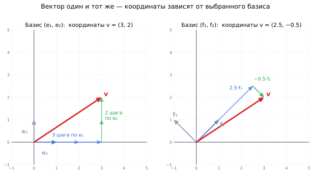
Слева стандартный базис: чтобы дойти до $v$, нужно сделать 3 шага по $e_1$ и 2 по $e_2$ — координаты $(3, 2)$. Справа тот же самый вектор $v$ (та же красная стрелка!), но базис повёрнут на 45°: теперь до него добираются как $2.5\cdot f_1 - 0.5\cdot f_2$, и координаты равны $(2.5,\, -0.5)$. Сам вектор не изменился — изменились только числа, которыми мы его описываем. Координаты — это не свойство вектора, а свойство пары «вектор + базис». Один и тот же объект в разных базисах описывается разными числами.
Это ровно то, что происходит в PCA: данные не меняются, меняется система координат. Мы поворачиваем оси так, чтобы первая ось смотрела вдоль направления наибольшего разброса данных, вторая — вдоль следующего по величине, и так далее. После такого поворота часть новых координат оказывается почти нулевой у всех объектов — их можно выбросить, потеряв совсем немного информации. Это и есть снижение размерности.
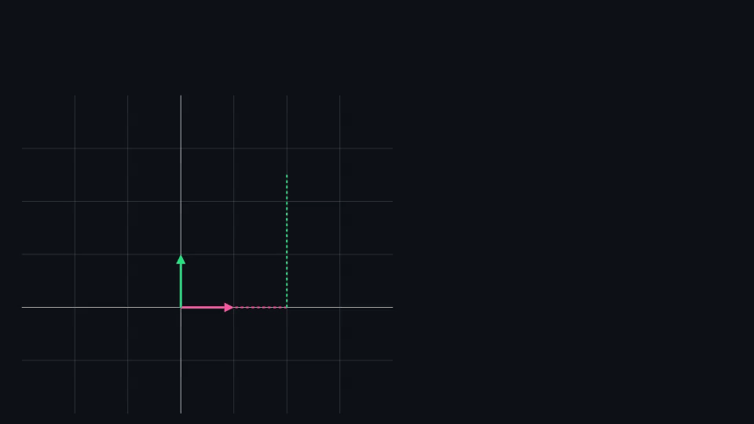
Оранжевый вектор $v$ не двигается. Сетка наклоняется — базис $e_1, e_2$ превращается в $f_1, f_2$ — и координаты пересчитываются на лету: $(2,\,2.5)$ становится $(2.69,\,1.15)$. Пунктир показывает путь «столько шагов по $f_1$, столько по $f_2$». Базис — это система отсчёта, а координаты — лишь способ описать один и тот же объект. Особенно удобны базисы, у которых векторы попарно перпендикулярны и имеют единичную длину:
$$e_i \cdot e_j = \begin{cases} 1, & i = j \\ 0, & i \neq j \end{cases}$$
Такой базис называется ортонормированным («орто» — перпендикулярны, «нормированный» — длины равны 1). Стандартный базис — самый простой пример.
Причина сугубо практическая: в таком базисе координаты считаются одним скалярным произведением, без решения системы уравнений:
$$a_i = v \cdot e_i$$
В произвольном (косом) базисе для поиска координат пришлось бы решать систему $n$ уравнений с $n$ неизвестными — операция порядка $O(n^3)$. В ортонормированном достаточно $n$ скалярных произведений.
Именно поэтому ортонормированность — не эстетическая прихоть: она стоит за эффективностью PCA, SVD, QR-разложения и преобразования Фурье. И именно поэтому в SVD матрицы $U$ и $V$ делают ортогональными.
Рассмотрим картинки и текст.
Изображения с каналами $C$ и размера $H \times W$ можно трактовать как векторы в $\mathbb{R}^{H \times W \times C}$. Также можно строить векторные представления картинок.
Тексты — векторы, получаемые через word embeddings. В таком сетапе получается, что картинки и текст — это объекты многомерных пространств, называемых латентными пространствами (пространства признаков). Эти пространства выучиваются в процессе обучения нейросети, которая эти векторные представления (эмбеддинги) строит.
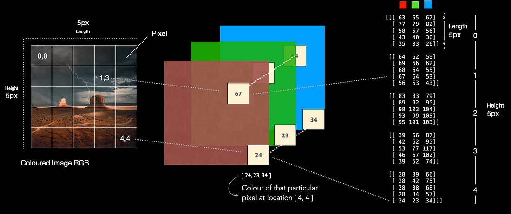
RGB изображения имеют 3 цветовых канала, и потому их shape выражается кортежем из трёх значений: $(H,W,C)$. Источник: статья на Medium Фотография $224\times224\times3$ формально живёт в пространстве размерности $150\,528$. Но осмысленные фотографии занимают в нём исчезающе малую часть: случайный вектор из этого пространства — это шум, а не картинка.
Идея, что реальные данные сосредоточены вблизи подпространства (точнее, поверхности) гораздо меньшей размерности, называется manifold hypothesis — гипотезой о многообразии. Именно она объясняет, почему автоэнкодер способен сжать картинку до 128 чисел и восстановить обратно, почему эмбеддинги текста в 768 измерений «хватает» на весь язык и почему PCA не разрушает данные.
Отсюда важное различие: формальная размерность пространства (сколько чисел мы храним) и внутренняя размерность данных (сколько чисел реально нужно). Вторая обычно на порядки меньше первой, и почти вся работа с представлениями — это попытка до неё добраться.
- Базис не единственный, размерность единственна. Спутать эти два утверждения — классическая ошибка на собеседовании.
- Нулевой вектор не может входить в базис. Любой набор, содержащий $\vec{0}$, линейно зависим: достаточно взять при нём коэффициент 1, а при остальных 0.
- Размерность — это не количество чисел в записи, а количество независимых направлений. Плоскость в $\mathbb{R}^3$ описывается тройками чисел, но её размерность равна 2.
- Базис пространства ≠ базис подпространства. У плоскости внутри $\mathbb{R}^3$ базис состоит из двух векторов, хотя каждый из них записан тремя координатами.
Что такое базис векторного пространства?
Максимальный набор линейно независимых векторов, порождающих всё пространство: их достаточно, чтобы собрать любой вектор, и при этом ни один из них не лишний.
Что такое размерность пространства? Единственна ли она?
Количество векторов в базисе; для $\mathbb{R}^n$ она равна $n$. Базисов бесконечно много, но число векторов в любом из них одинаково — поэтому размерность является характеристикой самого пространства.
Как любой вектор разлагается по базису и почему это разложение единственно?
$v = \sum_{i=1}^n a_i e_i$. Единственность обеспечивается линейной независимостью базиса: будь среди векторов лишний, тот же вектор собирался бы разными способами и координаты потеряли бы смысл.
Что такое координаты вектора?
Коэффициенты $a_i$ в разложении вектора по базису $\{e_1, \dots, e_n\}$. Координаты — свойство пары «вектор + базис»: один и тот же вектор в разных базисах описывается разными числами.
Что такое ортонормированный базис и чем он удобен?
Базис из попарно перпендикулярных векторов единичной длины: $e_i \cdot e_j = 1$ при $i = j$ и $0$ иначе. Удобен тем, что координаты находятся одним скалярным произведением $a_i = v \cdot e_i$, без решения системы уравнений. На этом стоят PCA, SVD и преобразование Фурье.
Как смена базиса связана с PCA?
PCA — это переход к новому ортонормированному базису, оси которого направлены вдоль наибольшего разброса данных. Данные не меняются, меняется система координат; после поворота часть координат оказывается почти нулевой, и их отбрасывают.
Что такое гипотеза о многообразии (manifold hypothesis)?
Утверждение, что реальные данные занимают лишь малую часть формально огромного пространства и сосредоточены вблизи поверхности гораздо меньшей размерности. Она объясняет, почему сжатие представлений (автоэнкодеры, эмбеддинги, PCA) вообще работает.
-
Подпространства
Подпространство — это подмножество векторного пространства, само являющееся векторным пространством.
Чтобы подмножество $W$ векторного пространства $V$ было подпространством, достаточно двух условий:
- Сумма любых двух элементов из $W$ снова в $W$.
- Умножение любого элемента из $W$ на скаляр снова даёт элемент из $W$.
Иными словами, подпространство "замкнуто" относительно операций сложения и умножения на скаляр.
Проверять все восемь аксиом не нужно: они автоматически наследуются от объемлющего пространства $V$ — если равенство $u + v = v + u$ верно для всех векторов $V$, оно верно и для тех из них, что попали в $W$.
«Замкнуто относительно операции» значит: что бы вы ни делали разрешёнными действиями, вы никогда не выйдете наружу.
Аналогия: комната замкнута относительно ходьбы, если из неё нельзя выйти пешком. Подпространство — это такая часть пространства, из которой нельзя «выйти», складывая свои векторы и растягивая их.
Из второго условия при $\alpha = 0$ немедленно следует, что любое подпространство содержит нулевой вектор.
Это даёт бесплатный тест на отсев: если множество не проходит через начало координат, оно точно не подпространство, и дальше проверять нечего. Так отсеиваются, например, «плоскость на высоте 2», «множество векторов с первой координатой, равной 5» и любые сдвинутые фигуры.
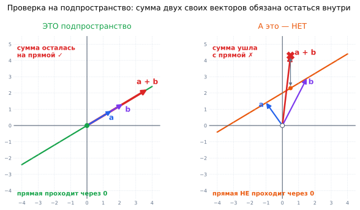
Слева прямая проходит через начало координат: сколько ни складывай лежащие на ней векторы $a$ и $b$, сумма остаётся на той же прямой — это подпространство. Справа прямая сдвинута вверх и через ноль не проходит: векторы $a$ и $b$ лежат на ней, а их сумма (красный крестик) оказывается заметно выше — множество не замкнуто относительно сложения, и подпространством не является. Плоскость, проходящая через начало координат в трёхмерном пространстве $\mathbb{R}^3$, представляет собой подпространство размерности $2$. В общем случае подпространство размерности $n-1$ в $n$-мерном пространстве называется гиперплоскостью.
А вот произвольная плоскость, не проходящая через начало координат, подпространством не является — сложение двух векторов в ней может вывести за её пределы.
Полезно один раз перечислить их все — их всего четыре типа:
Размерность Что это геометрически Пример $0$ одна точка — только $\{\vec{0}\}$ нулевое подпространство $1$ прямая через начало координат $\operatorname{span}\{(1,2,3)\}$ $2$ плоскость через начало координат $\operatorname{span}\{(1,0,0), (0,1,0)\}$ $3$ всё пространство $\mathbb{R}^3$ оно само Обратите внимание: сфера, куб, «первый октант» (векторы с положительными координатами) и любая кривая линия в этот список не попадают — ни одно из этих множеств не замкнуто относительно двух наших операций.
У любой матрицы $A \in \mathbb{R}^{m \times n}$ есть два подпространства, которые вы будете встречать постоянно:
- Пространство столбцов $\operatorname{col}(A)$ — линейная оболочка столбцов $A$, то есть множество всех векторов вида $A\vec{x}$. Его размерность и есть ранг матрицы.
- Ядро $\ker(A)$ — множество векторов, которые матрица обнуляет: $\{\vec{x} : A\vec{x} = \vec{0}\}$.
Ядро всегда содержит хотя бы нулевой вектор. Если оно содержит что-то ещё — значит, матрица «схлопывает» какие-то направления и необратима.
Это не абстракция: на нём стоит вся геометрия метода наименьших квадратов.
Модель может выдать только вектор вида $\hat{\mathbf{y}} = X\mathbf{w}$, то есть любую точку из $\operatorname{col}(X)$ — и ни одну за его пределами. Настоящий вектор ответов $\mathbf{y}$ в этом подпространстве, как правило, не лежит.
Что тогда делает МНК? Выбирает в $\operatorname{col}(X)$ ближайшую к $\mathbf{y}$ точку, то есть ортогональную проекцию $\mathbf{y}$ на пространство столбцов. Вектор остатков $\mathbf{y} - \hat{\mathbf{y}}$ при этом оказывается перпендикулярен всем признакам — отсюда и знаменитое нормальное уравнение $X^\top(\mathbf{y} - X\mathbf{w}) = 0$, и формула $\mathbf{w} = (X^\top X)^{-1}X^\top \mathbf{y}$.
В ML понятие подпространства ключевое для понимания PCA и SVD: главные компоненты задают подпространство меньшей размерности, которое наилучшим образом аппроксимирует исходные данные. По сути мы проецируем данные на это подпространство, теряя наименьшее количество информации.
Слово «наилучшим» здесь имеет точный смысл: среди всех подпространств размерности $k$ выбирается то, для которого суммарный квадрат расстояний от точек до их проекций минимален.
- Забывают проверить ноль. Это самая быстрая проверка, и она отсекает большинство «почти подпространств». Любое сдвинутое множество (прямая или плоскость не через начало координат) подпространством не является; такие объекты называют аффинными.
- Считают подпространством «положительный октант». Множество векторов с неотрицательными координатами замкнуто относительно сложения, но не относительно умножения на $-1$. Нужны оба условия сразу.
- Путают размерность подпространства и длину записи вектора. У плоскости в $\mathbb{R}^3$ размерность 2, хотя каждый её вектор записан тремя числами.
- Объединение подпространств — обычно не подпространство. Две разные прямые через ноль по отдельности являются подпространствами, а их объединение — нет: сумма векторов с разных прямых не лежит ни на одной из них. А вот пересечение двух подпространств всегда подпространство.
Что такое подпространство? Каким двум условиям оно должно удовлетворять?
Подмножество $W \subseteq V$, само являющееся векторным пространством. Достаточно проверить замкнутость: сумма любых двух элементов $W$ лежит в $W$, и произведение любого элемента на скаляр тоже лежит в $W$. Остальные аксиомы наследуются от объемлющего пространства.
Почему любое подпространство содержит нулевой вектор?
Из замкнутости относительно умножения на скаляр при $\alpha = 0$: $0 \cdot \vec{u} = \vec{0} \in W$. Это даёт быстрый отсев — множество, не проходящее через начало координат, подпространством не является.
Является ли плоскость, не проходящая через начало координат, подпространством?
Нет — она не содержит нуля, и сложение двух её векторов выводит за её пределы. Такие сдвинутые множества называют аффинными.
Какие подпространства существуют в $\mathbb{R}^3$?
Четыре типа: нулевое $\{\vec{0}\}$ (размерность 0), прямая через начало координат (1), плоскость через начало координат (2) и всё пространство (3).
Что такое пространство столбцов и ядро матрицы?
$\operatorname{col}(A)$ — линейная оболочка столбцов, то есть все векторы вида $A\vec{x}$; его размерность равна рангу. $\ker(A)$ — множество векторов, которые матрица обнуляет: $A\vec{x} = \vec{0}$. Нетривиальное ядро означает, что матрица схлопывает направления и необратима.
Как подпространства объясняют метод наименьших квадратов?
Предсказания линейной модели могут быть только векторами из $\operatorname{col}(X)$. МНК выбирает в этом подпространстве ближайшую к $\mathbf{y}$ точку — ортогональную проекцию, поэтому остатки перпендикулярны признакам, что и даёт нормальное уравнение.
Как понятие подпространства связано с PCA и SVD?
Главные компоненты задают подпространство меньшей размерности, которое наилучшим образом (в смысле минимума суммарного квадрата расстояний) аппроксимирует данные при проекции — с минимальной потерей информации.
-
Линейная зависимость и независимость
Набор векторов $\vec{v}_1, \vec{v}_2, \dots, \vec{v}_k$ называется:
Линейно зависимым, если существует нетривиальная линейная комбинация, равная нулевому вектору: $$\alpha_1 \vec{v}_1 + \alpha_2 \vec{v}_2 + \dots + \alpha_k \vec{v}_k = \sum_{i=1}^k \alpha_i \vec{v}_i = \vec{0}, \quad \text{где не все } \alpha_i = 0.$$
Линейно независимым, если линейная комбинация равна нулю только тогда, когда все коэффициенты равны нулю: $$\sum_{i=1}^k \alpha_i \vec{v}_i = \vec{0} \quad \Rightarrow \quad \alpha_1 = \alpha_2 = \dots = \alpha_k = 0.$$
Комбинация с нулевыми коэффициентами даёт нулевой вектор всегда, у любого набора: $0\vec{v}_1 + 0\vec{v}_2 = \vec{0}$. Такая комбинация называется тривиальной и никакой информации не несёт.
Вопрос всегда в другом: можно ли получить ноль как-то ещё — взяв хотя бы один ненулевой коэффициент. Если да — векторы зависимы. Если единственный способ получить ноль это взять все коэффициенты нулевыми — независимы.
Иными словами, линейная зависимость означает, что хотя бы один из векторов можно выразить через остальные.
Проверьте это на определении: если $2\vec{v}_1 + 3\vec{v}_2 - \vec{v}_3 = \vec{0}$, то достаточно перенести: $\vec{v}_3 = 2\vec{v}_1 + 3\vec{v}_2$. Третий вектор не добавляет ничего нового — он уже собирается из первых двух и является лишним.
Линейная независимость означает, что ни один из векторов не выражается через остальные, то есть не принадлежит их линейной оболочке. Это ключевое свойство, лежащее в основе понятия базиса: базис векторного пространства — это минимальный набор линейно независимых векторов, порождающий всё пространство.
Геометрическая формулировка, которую удобно держать в голове: независимость означает, что каждый вектор «смотрит туда, куда не смотрит никакая комбинация остальных».
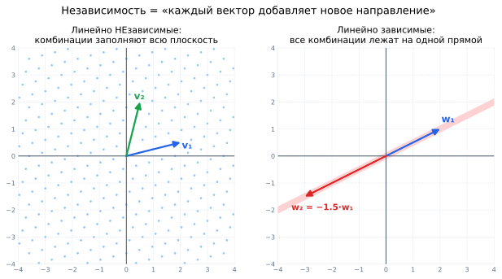
Слева два независимых вектора: складывая и растягивая их, можно попасть в любую точку плоскости — голубые точки показывают достижимые комбинации. Справа $w_2$ получается из $w_1$ умножением на $-1.5$, то есть добавляет ровно ноль новой информации: сколько ни комбинируй, все результаты остаются на одной розовой прямой, а вся остальная плоскость недостижима. Рассмотрим три вектора в $\mathbb{R}^2$:
$$\vec{v}_1 = \begin{bmatrix} 1 \\ 0 \end{bmatrix}, \quad \vec{v}_2 = \begin{bmatrix} 0 \\ 1 \end{bmatrix}, \quad \vec{v}_3 = \begin{bmatrix} 2 \\ 3 \end{bmatrix}$$
Вектор $\vec{v}_3 = 2\vec{v}_1 + 3\vec{v}_2$ — он линейно зависим от первых двух. Поэтому три вектора на плоскости всегда линейно зависимы: третий — "лишний".
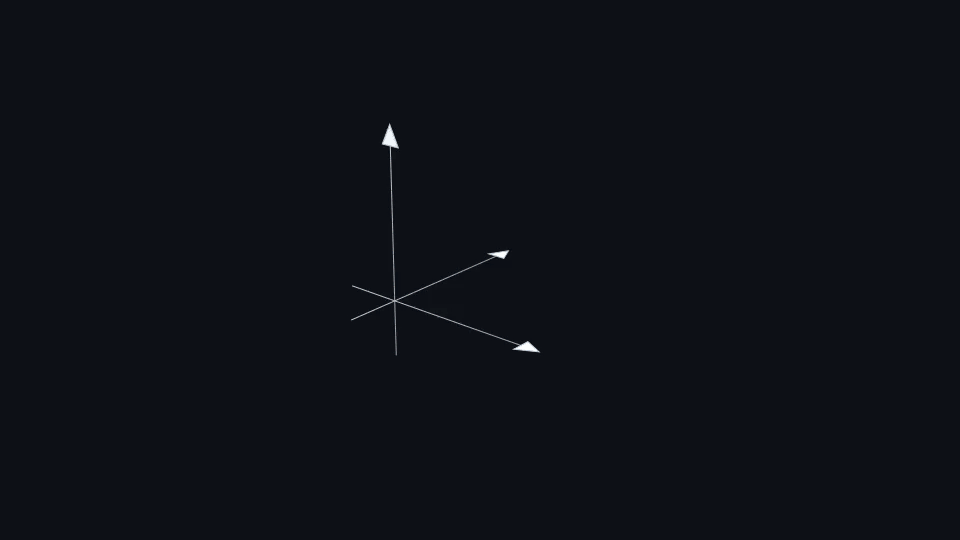
Три вектора в пространстве. Пока каждый добавляет новое направление, они натягивают объём. Стоит $v_3$ стать комбинацией $v_1$ и $v_2$ — объём исчезает, остаётся плоскость; стоит $v_2$ стать кратным $v_1$ — остаётся прямая. Зависимый вектор не добавляет ничего нового. В $\mathbb{R}^n$ любой набор из более чем $n$ векторов линейно зависим.
Три вектора на плоскости, четыре в трёхмерном пространстве, 1001 вектор в $\mathbb{R}^{1000}$ — всегда зависимы, без всяких вычислений. Причина простая: независимых направлений в пространстве ровно $n$, а больше взять неоткуда.
Обратное неверно: набор из $n$ векторов в $\mathbb{R}^n$ может оказаться зависимым (если два из них параллельны), а может и не оказаться. Тут уже надо считать.
Ручной способ — приравнять комбинацию к нулю и решить систему. На практике же поступают проще:
- Составить матрицу, у которой векторы — столбцы.
- Посчитать её ранг (в NumPy это
np.linalg.matrix_rank). - Если ранг равен числу векторов — они независимы. Если меньше — зависимы, и разность показывает, сколько «лишних».
Для квадратной матрицы есть ещё более короткий тест: столбцы независимы тогда и только тогда, когда $\det A \neq 0$. Оба сюжета — ранг и определитель — разбираются в следующих вопросах, и оба, по сути, отвечают на один и тот же вопрос «сколько здесь настоящих направлений».
В реальных данных точная зависимость почти не встречается: два признака никогда не связаны идеально, всегда есть шум. Зато сплошь и рядом встречается почти-зависимость — вектор почти выражается через остальные.
Для математики это независимость, а для вычислений — беда: система становится плохо обусловленной, и крошечное изменение данных даёт огромное изменение решения. Поэтому вместо бинарного «rank == k» на практике смотрят на число обусловленности или на сингулярные значения: если самое маленькое из них на несколько порядков меньше самого большого, набор считают вырожденным независимо от того, что формально показал ранг.
В ML это понятие связано с проблемой мультиколлинеарности признаков. Если два признака в датасете линейно зависимы (один выражается через другой), то матрица признаков вырождена — задача линейной регрессии становится некорректной.
Живой пример: в таблице клиентов есть признаки
доход_в_рублях,доход_в_тысячахирасход, причём третий составляет ровно 60% от дохода. Первые два связаны множителем 1000, третий — множителем 0.6. Столбцы линейно зависимы, и матрица $X^\top X$ становится необратимой: формула $\mathbf{w} = (X^\top X)^{-1}X^\top\mathbf{y}$ перестаёт работать.Ранг матрицы признаков (следующий раздел) показывает, сколько реально независимых "направлений" содержится в данных.
Стоит различать два разных последствия, потому что путают их постоянно:
- Веса становятся неустойчивыми и неинтерпретируемыми. Если $x_2 = 1000 x_1$, то пары весов $(1000, 0)$, $(0, 1)$ и $(2000, -1)$ дают буквально одинаковые предсказания. Модель выберет любую, и на соседней выборке выберет другую — знак и величина коэффициента перестают что-либо значить.
- Качество предсказаний при этом может не пострадать. Если задача — только прогноз, мультиколлинеарность часто безобидна.
Отсюда практические лекарства: $L_2$-регуляризация (Ridge) добавляет $\lambda I$ к $X^\top X$ и делает матрицу обратимой при любых данных; PCA убирает зависимость, переходя к ортогональным компонентам; либо просто выбрасывают дублирующие признаки. Заодно понятно, почему деревья и бустинги к мультиколлинеарности почти безразличны — они не решают систему уравнений и не ищут обратную матрицу.
- Зависимость — свойство набора, а не отдельного вектора. Нельзя сказать «этот вектор зависимый»; говорят «набор зависим». И «лишним» в нём можно объявить любой из связанных векторов, а не какой-то конкретный.
- Набор с нулевым вектором всегда зависим. Коэффициент 1 при нуле и нули при остальных дают нетривиальную комбинацию, равную $\vec{0}$.
- Два вектора зависимы ⟺ они параллельны (один — кратное другого). Для трёх и более векторов простого геометрического критерия уже нет — считайте ранг.
- Корреляция и линейная зависимость — не одно и то же. Корреляция $\pm 1$ действительно означает линейную зависимость, но зависимыми могут оказаться и три признака, попарные корреляции которых далеки от единицы: например, когда третий равен сумме первых двух.
Когда набор векторов называется линейно зависимым?
Если существует нетривиальная линейная комбинация, равная нулевому вектору, — то есть хотя бы один коэффициент ненулевой. Равносильная формулировка: хотя бы один вектор выражается через остальные и является лишним.
Когда набор векторов называется линейно независимым?
Если равенство $\sum \alpha_i \vec{v}_i = \vec{0}$ возможно только при всех нулевых коэффициентах. Геометрически: каждый вектор добавляет направление, недостижимое комбинациями остальных.
Могут ли три вектора в $\mathbb{R}^2$ быть линейно независимыми?
Нет. В $\mathbb{R}^n$ любой набор более чем из $n$ векторов заведомо зависим — независимых направлений в пространстве всего $n$. В $\mathbb{R}^2$ третий вектор всегда выражается через первые два (если те не параллельны).
Как проверить линейную независимость на практике?
Составить матрицу из этих векторов как столбцов и посчитать её ранг: равен числу векторов — независимы, меньше — зависимы. Для квадратной матрицы достаточно проверить, что $\det A \neq 0$.
Как линейная зависимость связана с мультиколлинеарностью в ML?
Линейно зависимые признаки делают матрицу $X^\top X$ вырожденной, и формула МНК $(X^\top X)^{-1}X^\top\mathbf{y}$ перестаёт работать: обратной матрицы не существует.
Чем именно вредна мультиколлинеарность и как с ней бороться?
Веса становятся неустойчивыми и неинтерпретируемыми — разные наборы коэффициентов дают одинаковые предсказания, и модель выбирает любой. Качество прогноза при этом может не страдать. Лекарства: $L_2$-регуляризация (Ridge), PCA, удаление дублирующих признаков. Деревья и бустинги к этой проблеме почти нечувствительны.
Чем «почти зависимые» векторы опасны на практике?
Формально они независимы, но система оказывается плохо обусловленной: малое изменение данных даёт большое изменение решения. Поэтому вместо бинарной проверки ранга смотрят на число обусловленности или на отношение наибольшего сингулярного значения к наименьшему.
-
Элементарные преобразования над матрицами
Элементарными преобразованиями строк называют:
- Перестановку местами любых двух строк матрицы;
- Умножение любой строки матрицы на ненулевую константу $k$;
- Прибавление к любой строке матрицы другой строки, умноженной на некоторую константу.
Список выглядит произвольным, пока не вспомнить, что строка матрицы — это уравнение системы. Тогда каждая операция становится очевидной:
- Переставить строки = записать уравнения в другом порядке. Очевидно, ничего не меняет.
- Умножить строку на $k \neq 0$ = домножить обе части уравнения на число. Тоже безобидно — при условии, что $k \neq 0$ (иначе уравнение просто исчезнет, превратившись в $0 = 0$).
- Прибавить к строке другую строку = сложить два верных уравнения. Из двух верных равенств их сумма тоже верна.
То есть это ровно те действия, которые вы делали в школе, решая систему методом подстановки, — только записанные компактно.
- Аналогично определяются элементарные преобразования столбцов.
- Элементарные преобразования обратимы: каждое можно отменить другим преобразованием того же типа (прибавили $2R_1$ — вычтите $2R_1$).
- Обозначение: $A\sim B$ указывает на то, что матрица $A$ может быть получена из $B$ путём элементарных преобразований (или наоборот). Читается «эквивалентны».
- Запись $R_2 \leftarrow R_2 - 4R_1$ означает «новая вторая строка = старая вторая минус учетверённая первая». Букву $R$ берут от row (строка), для столбцов пишут $C$.
Элементарные преобразования — рабочий инструмент для ручного решения систем линейных уравнений методом Гаусса (приведение к ступенчатому виду). Ключевое свойство: они не меняют ранг матрицы и не меняют множество решений системы, поэтому с их помощью безопасно упрощать матрицу.
Это и есть весь смысл метода: мы имеем право сколько угодно «портить» матрицу этими тремя операциями, потому что интересующие нас величины при этом не страдают. Задача — довести её до вида, в котором ответ читается глазами.
Аккуратность здесь важна, потому что «преобразования ничего не меняют» — опасное упрощение:
Величина Сохраняется? Ранг матрицы да Множество решений системы да Пространство строк да Определитель нет — меняется по правилам ниже Собственные числа нет Пространство столбцов нет Для определителя правила такие: перестановка двух строк меняет знак, умножение строки на $k$ умножает определитель на $k$, а прибавление кратного другой строки не меняет его вовсе. Именно последним свойством и пользуются, когда считают определитель приведением к треугольному виду.
Приведём матрицу к верхнетреугольному виду:
$$A = \begin{bmatrix} 1 & 2 & 3 \\ 4 & 5 & 6 \\ 7 & 8 & 9 \end{bmatrix}$$
Шаг 1: $R_2 \leftarrow R_2 - 4R_1$, $R_3 \leftarrow R_3 - 7R_1$:
$$\begin{bmatrix} 1 & 2 & 3 \\ 0 & -3 & -6 \\ 0 & -6 & -12 \end{bmatrix}$$
Шаг 2: $R_3 \leftarrow R_3 - 2R_2$:
$$\begin{bmatrix} 1 & 2 & 3 \\ 0 & -3 & -6 \\ 0 & 0 & 0 \end{bmatrix}$$
Нулевая строка говорит о том, что $\operatorname{rank}(A) = 2$, то есть строки линейно зависимы.
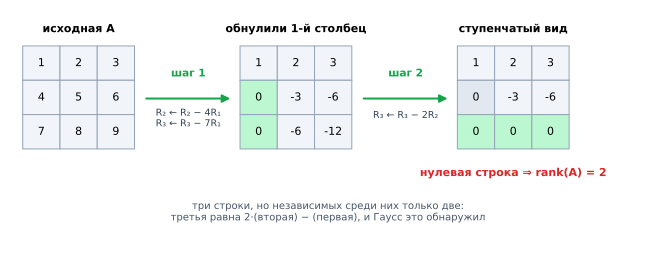
Тот же расчёт по шагам: зелёным подсвечены клетки, которые обнулились на очередном шаге, серым — уже обнулённые ранее. На каждом шаге берётся ведущий элемент и с его помощью убирается всё, что стоит под ним. Нулевая строка в конце — не случайность: третья строка исходной матрицы равнялась $2 \cdot (\text{вторая}) - (\text{первая})$, и метод Гаусса вытащил эту скрытую зависимость наружу. Разберём, зачем делались именно такие действия — логика всегда одна и та же.
Шаг 1. Берём первый элемент первой строки (его называют ведущим элементом, или pivot) и с его помощью обнуляем всё, что стоит под ним. Чтобы убить четвёрку во второй строке, нужно вычесть первую строку, умноженную на $4/1 = 4$. Для семёрки — умноженную на 7.
Шаг 2. Спускаемся к следующему столбцу и повторяем: ведущий элемент теперь $-3$, под ним стоит $-6$, значит вычитаем удвоенную вторую строку.
Итог. Нулевая строка появилась не случайно: в исходной матрице третья строка равнялась $2 \cdot (\text{вторая}) - (\text{первая})$. Метод Гаусса эту скрытую зависимость обнаружил и предъявил в явном виде — в этом и состоит его ценность.
Матрица ступенчатого вида (row echelon form) устроена так: каждая следующая строка начинается с нулей дальше, чем предыдущая, а полностью нулевые строки собраны внизу.
$$\begin{bmatrix} \boxed{2} & 1 & 3 & 4 \\ 0 & \boxed{5} & 1 & 0 \\ 0 & 0 & 0 & \boxed{7} \\ 0 & 0 & 0 & 0 \end{bmatrix}$$
Обведённые числа — ведущие элементы. Число ненулевых строк в ступенчатом виде и есть ранг матрицы — это самый практичный способ его посчитать вручную.
Пусть дана система:
$$\begin{cases} x + 2y = 5 \\ 3x + 4y = 11 \end{cases}$$
Записываем расширенную матрицу (коэффициенты плюс столбец правых частей, отделённый чертой) и работаем со строками:
$$\left[\begin{array}{cc|c} 1 & 2 & 5 \\ 3 & 4 & 11 \end{array}\right] \xrightarrow{R_2 \leftarrow R_2 - 3R_1} \left[\begin{array}{cc|c} 1 & 2 & 5 \\ 0 & -2 & -4 \end{array}\right]$$
Вторая строка теперь читается как $-2y = -4$, откуда $y = 2$. Подставляем в первую: $x + 4 = 5$, значит $x = 1$.
Обратный ход (подстановка снизу вверх) — вторая половина метода Гаусса; если довести преобразования до конца и обнулить ещё и элементы над ведущими, получится приведённый ступенчатый вид, где ответ читается прямо из матрицы без всякой подстановки.
Метод Гаусса в чистом виде в продакшене не запускают, но его прямые потомки работают внутри почти любой библиотеки:
- LU-разложение — это и есть метод Гаусса, у которого запомнили все проделанные шаги; на нём стоит
scipy.linalg.solve. - Выбор ведущего элемента (pivoting) — обязательная добавка: перед каждым шагом строки переставляют так, чтобы наверху оказался наибольший по модулю элемент. Без этого деление на почти-ноль разрушает точность.
- Сложность — $O(n^3)$. Для матрицы $10^4 \times 10^4$ это уже около $10^{12}$ операций, поэтому в больших задачах переходят к итерационным методам.
- Обращение матрицы через Гаусса тоже возможно, но в коде почти всегда неправильно:
np.linalg.solve(A, b)точнее и быстрее, чемnp.linalg.inv(A) @ b.
- Умножение строки на ноль запрещено. Это не элементарное преобразование: операция необратима и уничтожает информацию, ранг может измениться.
- Забывают, что определитель меняется. Считая определитель через приведение к треугольному виду, нужно отслеживать знаки от перестановок и множители — иначе ответ будет неверным.
- Смешивают операции над строками и столбцами при решении системы. Строки — это уравнения, их трогать можно. Перестановка столбцов меняет порядок неизвестных, и об этом придётся помнить до самого конца; для вычисления ранга это безопасно, для решения системы — источник ошибок.
- Считают ранг «на глаз». Скрытая зависимость (как в примере выше, где третья строка равна $2R_2 - R_1$) обычно не видна в упор — именно поэтому и нужен метод Гаусса.
Перечислите три элементарных преобразования строк матрицы.
Перестановка двух строк; умножение строки на ненулевую константу; прибавление к строке другой строки, умноженной на константу. Все три соответствуют законным действиям с уравнениями системы.
Что сохраняется при элементарных преобразованиях, а что нет?
Сохраняются ранг матрицы, множество решений системы и пространство строк. Не сохраняются определитель (он меняется по известным правилам), собственные числа и пространство столбцов.
Как меняется определитель при каждом из трёх преобразований?
Перестановка двух строк меняет знак определителя; умножение строки на $k$ умножает определитель на $k$; прибавление кратного другой строки не меняет его. Последнее свойство позволяет считать определитель приведением к треугольному виду.
Для чего используются элементарные преобразования на практике?
Приведение матрицы к ступенчатому виду методом Гаусса — для решения систем уравнений, вычисления ранга и определителя, поиска обратной матрицы.
Как по ступенчатому виду определить ранг?
Ранг равен числу ненулевых строк в ступенчатом виде, то есть числу ведущих элементов. Нулевые строки указывают на линейные зависимости, скрытые в исходной матрице.
Почему умножение строки на ноль не является элементарным преобразованием?
Потому что операция необратима и уничтожает информацию: строка исчезает, и ранг может уменьшиться. Требование $k \neq 0$ гарантирует обратимость всех трёх преобразований.
Используется ли метод Гаусса в реальных вычислениях?
Да, в виде LU-разложения с выбором ведущего элемента — на нём построен
scipy.linalg.solve. Сложность $O(n^3)$, поэтому для очень больших матриц переходят к итерационным методам. В коде предпочитаютsolve(A, b)вместоinv(A) @ b— точнее и быстрее.
-
Ранг матрицы
Ранг матрицы — это максимальное число линейно независимых строк или столбцов матрицы. Иными словами, ранг показывает, сколько измерений информации содержится в матрице. Обозначается как $\operatorname{rank}(A)$. Если $A \in \mathbb{R}^{m \times n}$, то:
$$\operatorname{rank}(A) \leq \min(m, n)$$
В определении сказано «строк или столбцов» — и это не небрежность. Число независимых строк всегда равно числу независимых столбцов, у любой матрицы, какой бы несимметричной она ни была.
Это нетривиальная теорема (её называют теоремой о ранге), и именно она позволяет говорить об одном числе — ранге — вместо двух. Практическое следствие: $\operatorname{rank}(A) = \operatorname{rank}(A^\top)$, и считать можно по той стороне, по которой удобнее.
Ранг матрицы можно интерпретировать как:
- размерность пространства, натянутого на строки или столбцы,
- количество направлений, вдоль которых матрица действительно "работает" (т.е. сжимает, поворачивает и т.п.).
Второй взгляд самый полезный. Матрица — это преобразование пространства; ранг говорит, сколько измерений останется на выходе. Матрица $3\times3$ ранга 2 берёт трёхмерное пространство и расплющивает его в плоскость: одно измерение теряется безвозвратно.
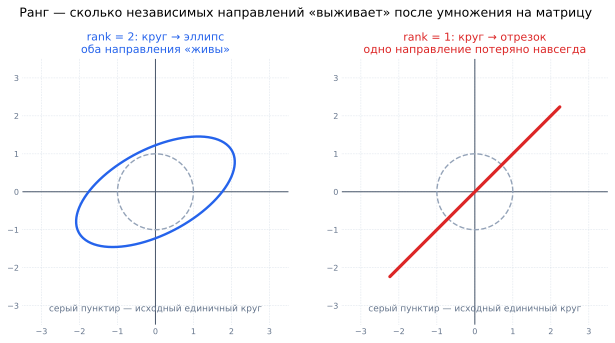
Слева матрица полного ранга: единичный круг превращается в эллипс — растянулся, повернулся, но остался двумерным. Справа матрица ранга 1: тот же круг схлопывается в отрезок, всё многообразие точек плоскости укладывается на одну прямую. Восстановить исходную картинку после такого сжатия невозможно — именно поэтому матрица неполного ранга необратима. $$A = \begin{bmatrix} 1 & 4 \\ 4 & 6 \\ 5 & 8 \end{bmatrix}$$
$\operatorname{rank}(A) = 2$
Здесь три строки, но матрица имеет всего два столбца, поэтому $\operatorname{rank} \leq \min(3, 2) = 2$. Столбцы не пропорциональны друг другу — значит, ранг ровно 2, то есть максимально возможный (такую матрицу называют матрицей полного ранга).
$$A = \begin{bmatrix} 1 & 4 & 5 & 6 & 7\\ 1 & 4 & 5 & 6 & 7\\ 1 & 4 & 5 & 6 & 7\\ \end{bmatrix}$$
$\operatorname{rank}(A) = 1$, потому что все строки линейно зависимы.
Матрица большая — 15 чисел, — а информации в ней ровно на одну строку. Обратите внимание, что и столбцы здесь все пропорциональны столбцу из единиц: теорема о равенстве строчного и столбцового ранга работает.
$$A = \begin{bmatrix} 1 & 4 & 5 \\ 13 & 7 & 8 \\ 1 & 4 & 6 \\ \end{bmatrix}$$
$\operatorname{rank}(A) = 3$, все строки линейно независимы, а для матрицы
$$A = \begin{bmatrix} 1 & 4 & 5 \\ 13 & 7 & 8 \\ 1 & 4 & 5 \\ \end{bmatrix}$$
$\operatorname{rank}(A) = 2$, потому что первая и третья строки линейно зависимы.
Различие между этими матрицами — одна цифра, а последствия огромные: первая обратима и система с ней имеет единственное решение, вторая вырождена.
Три вектора $v_1, v_2, v_3$ и параллелепипед, который они натягивают. Пока векторы независимы, ранг равен $3$ и есть объём. Как только $v_3 = 0.5v_1 + 0.7v_2$, объём схлопывается в плоскость — ранг $2$. Когда и $v_2$ становится кратным $v_1$, всё ложится на прямую — ранг $1$. Ранг — это число «выживших» направлений. - Вручную: привести матрицу к ступенчатому виду методом Гаусса и посчитать ненулевые строки. При элементарных преобразованиях ранг не меняется.
- В коде:
np.linalg.matrix_rank(A). - Как это устроено внутри: NumPy не делает Гаусса — он считает SVD и смотрит, сколько сингулярных значений превышают порог $\varepsilon$. Причина в устойчивости: на вещественных данных ровных нулей не бывает, и решать «ноль это или $10^{-17}$» приходится через порог, а не через сравнение.
Формально ранг — целое число, но на реальных данных он почти всегда оказывается максимальным: шум в последнем знаке делает любые строки «независимыми».
Поэтому практический вопрос звучит не «каков ранг?», а «насколько матрица близка к вырожденной?». Отвечает на него число обусловленности $\kappa = \sigma_{\max}/\sigma_{\min}$ — отношение наибольшего сингулярного значения к наименьшему. Ориентиры: $\kappa \sim 10$ — всё отлично; $\kappa \sim 10^6$ — тревожно; $\kappa > 10^{12}$ — матрицу можно считать вырожденной, результаты вычислений ей не доверяют.
Для квадратной матрицы $A \in \mathbb{R}^{n \times n}$ следующие утверждения эквивалентны — это разные формулировки одного и того же факта:
- $\operatorname{rank}(A) = n$ (полный ранг);
- $\det A \neq 0$;
- $A$ обратима, существует $A^{-1}$;
- строки (и столбцы) линейно независимы;
- система $A\vec{x} = \vec{b}$ имеет единственное решение при любом $\vec{b}$;
- ядро тривиально: $A\vec{x} = \vec{0}$ только при $\vec{x} = \vec{0}$;
- ноль не является собственным числом.
Стоит выучить этот список целиком: на собеседовании вопрос об одном пункте — это на самом деле вопрос обо всех.
В современных языковых моделях, таких как GPT, параметров настолько много, что обучение всей модели становится затратным. Метод LoRA (Low-Rank Adaptation) позволяет дообучать модель эффективно, добавляя небольшие матрицы низкого ранга.
Предположим, есть весовая матрица $W \in \mathbb{R}^{d \times d}$. Вместо того, чтобы изменять $W$ напрямую, добавляется адаптация вида:
$$W' = W + \Delta W, \quad \text{где} \quad \Delta W = A B,\quad A \in \mathbb{R}^{d \times r}, \ B \in \mathbb{R}^{r \times d},\ r \ll d$$
То есть вместо $d \times d$ параметров мы обучаем $2dr$ параметров. Это значительно снижает вычислительные затраты при сохранении эффективности. Таким образом, LoRA использует низкоранговое приближение матрицы изменения весов $\Delta W$ — это и есть прикладное использование ранга матрицы.
Подставим реальные величины. В слое трансформера $d = 4096$, значит полная матрица весов содержит $4096^2 \approx 16.8$ млн параметров. Берём $r = 8$: тогда $2dr = 2 \cdot 4096 \cdot 8 = 65\,536$ параметров — в 256 раз меньше.
Почему такое грубое ограничение не убивает качество? Произведение $AB$ по построению имеет ранг не выше $r$, то есть добавка $\Delta W$ может двигать веса лишь вдоль $r$ направлений. Эмпирическое наблюдение авторов LoRA состоит в том, что при дообучении под конкретную задачу веса и так меняются в малоразмерном подпространстве — модель уже умеет почти всё, ей нужна «поправка», а не переучивание. Ранг $r$ здесь работает как ручка регулировки: больше $r$ — больше свободы и больше параметров.
- Мультиколлинеарность: если $\operatorname{rank}(X) < $ числа признаков, матрица $X^\top X$ необратима и МНК неприменим.
- Рекомендательные системы: матрицу «пользователи $\times$ товары» приближают произведением двух узких матриц ранга $r$ — это матричная факторизация, и $r$ здесь равно числу скрытых факторов («жанр», «ценовой сегмент»).
- Сжатие изображений и моделей: заменяя матрицу низкоранговым приближением, экономят память ценой контролируемой потери качества.
- PCA: число главных компонент, которые вы оставляете, — это ранг приближения ваших данных.
При элементарных преобразованиях ранг матрицы не меняется. Именно поэтому метод Гаусса — законный способ его вычислить: мы упрощаем матрицу до неузнаваемости, но интересующее нас число остаётся прежним.
- Ранг ограничен меньшей стороной. У матрицы $1000 \times 3$ ранг не может превышать 3, сколько бы строк в ней ни было.
rank == nне означает «всё хорошо». Численно матрица может быть на грани вырождения; смотрите число обусловленности.- Ранг суммы не равен сумме рангов. Верно лишь неравенство $\operatorname{rank}(A + B) \leq \operatorname{rank}(A) + \operatorname{rank}(B)$; для произведения — $\operatorname{rank}(AB) \leq \min(\operatorname{rank}A, \operatorname{rank}B)$, из чего и следует, что $\Delta W = AB$ в LoRA не может иметь ранг выше $r$.
- Ранг нулевой матрицы равен нулю, а не единице — это единственная матрица с нулевым рангом.
Что такое ранг матрицы? Что он показывает?
Максимальное число линейно независимых строк (или столбцов). Показывает, сколько независимых «направлений» реально содержится в матрице и сколько измерений остаётся после применения её как преобразования.
Почему ранг по строкам совпадает с рангом по столбцам?
Это теорема о ранге — нетривиальный факт, верный для любой матрицы. Практическое следствие: $\operatorname{rank}(A) = \operatorname{rank}(A^\top)$, и считать можно с удобной стороны.
Каково максимально возможное значение $\operatorname{rank}(A)$ для $A \in \mathbb{R}^{m \times n}$?
$\operatorname{rank}(A) \leq \min(m, n)$. Матрица, у которой ранг достигает этой границы, называется матрицей полного ранга.
Что означает $\operatorname{rank}(A) = 1$?
Все строки пропорциональны друг другу (и все столбцы тоже) — матрица содержит только одно линейно независимое направление и представима как произведение вектора-столбца на вектор-строку.
Как связаны ранг, определитель и обратимость квадратной матрицы?
Для $A \in \mathbb{R}^{n\times n}$ эквивалентны: полный ранг $n$, $\det A \neq 0$, существование $A^{-1}$, линейная независимость строк, единственность решения $A\vec{x} = \vec{b}$, тривиальность ядра, отсутствие нулевого собственного числа.
Как посчитать ранг на практике и почему используют SVD?
Вручную — методом Гаусса, посчитав ненулевые строки в ступенчатом виде. В коде —
np.linalg.matrix_rank, который внутри считает SVD и сравнивает сингулярные значения с порогом: на вещественных данных точных нулей не бывает, и нужен устойчивый критерий.Как ранг матрицы используется в LoRA?
LoRA обучает низкоранговую добавку $\Delta W = AB$ с $r \ll d$ вместо полной матрицы весов: при $d = 4096$ и $r = 8$ это $65$ тыс. параметров вместо $16.8$ млн. Работает потому, что при дообучении под конкретную задачу веса меняются в малоразмерном подпространстве.
-
Виды матриц
Список видов матриц можно посмотреть на англоязычной странице Википедии.
Заучивать его целиком не нужно. Виды матриц — это не биологическая классификация, а ярлыки, за которыми стоят полезные свойства: если матрица симметрична, у неё гарантированно вещественные собственные числа; если ортогональна — она не искажает длины. Читая «матрица симметрична», сразу вспоминайте, что из этого следует.
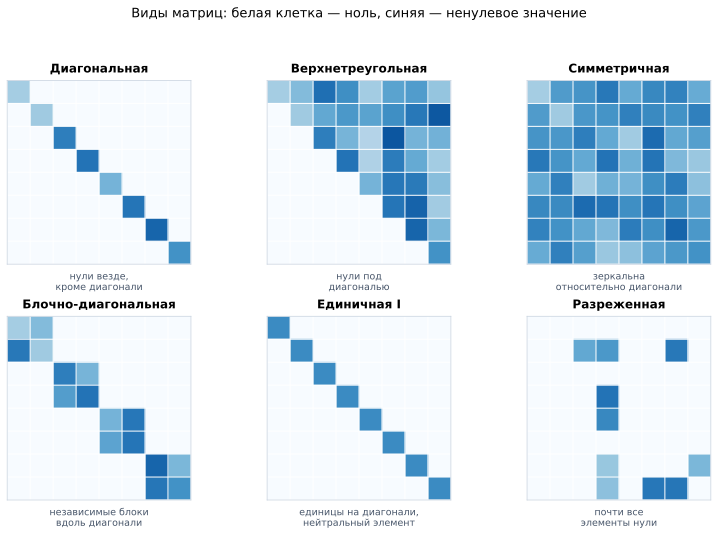
Шесть типов матриц глазами: белая клетка — ноль, синяя — ненулевое значение. Диагональная, треугольная, блочно-диагональная, единичная и разреженная опознаются по расположению нулей. А вот симметричность (и ортогональность) — свойство не про нули, а про значения: у симметричной матрицы картинка зеркальна относительно главной диагонали, хотя нулей в ней может не быть вовсе. Квадратная матрица — матрица, у которой число строк и столбцов одинаково: $A \in \mathbb{R}^{n \times n}$: $$A = \begin{bmatrix} a_{11} & a_{12} & \dots & a_{1n} \\ a_{21} & a_{22} & \dots & a_{2n} \\ \vdots & \vdots & \ddots & \vdots \\ a_{n1} & a_{n2} & \dots & a_{nn} \end{bmatrix}$$
Прямоугольная матрица — общее название матрицы произвольного размера $m \times n$, где $m \ne n$: $$A = \begin{bmatrix} a_{11} & a_{12} & \dots & a_{1n} \\ a_{21} & a_{22} & \dots & a_{2n} \\ \vdots & \vdots & \ddots & \vdots \\ a_{m1} & a_{m2} & \dots & a_{mn} \end{bmatrix}$$
Квадратная матрица переводит пространство само в себя: вход и выход имеют одну размерность. Только для таких матриц имеют смысл определитель, собственные числа и обратная матрица — вопрос «во сколько раз изменился объём» осмыслен, лишь когда объём мерится в том же пространстве.
Прямоугольная матрица меняет размерность: $A \in \mathbb{R}^{3 \times 5}$ берёт вектор из $\mathbb{R}^5$ и выдаёт вектор из $\mathbb{R}^3$. Именно так устроен слой нейросети, сжимающий 784 пикселя в 128 признаков.
Диагональная матрица — квадратная матрица, у которой все элементы вне главной диагонали равны нулю: $$D = \begin{pmatrix} d_1 & 0 & \dots & 0 \\ 0 & d_2 & \dots & 0 \\ \vdots & \vdots & \ddots & \vdots \\ 0 & 0 & \dots & d_n \end{pmatrix}$$ Это частный случай треугольной и симметричной матрицы.
Если все $d_i = 1$, получается единичная матрица $I$ (или $E$) — нейтральный элемент умножения: $AI = IA = A$, аналог единицы среди чисел.
Диагональная матрица — это растяжение каждой оси на свой коэффициент, без всякого перемешивания. Отсюда все её удобства:
- умножение $D\vec{x}$ — это просто поэлементное умножение, $O(n)$ вместо $O(n^2)$;
- определитель равен произведению диагональных элементов;
- собственные числа — сами диагональные элементы, а собственные векторы — оси координат;
- обратная матрица получается заменой каждого $d_i$ на $1/d_i$ (если ни одно не равно нулю).
Именно поэтому вся тяжёлая техника линейной алгебры — диагонализация, SVD, спектральное разложение — сводится к одной идее: найти базис, в котором матрица становится диагональной.
Треугольная матрица — квадратная матрица, у которой все элементы выше (или ниже) главной диагонали равны нулю:
- Верхнетреугольная: $a_{ij} = 0$ при $i > j$: $$A = \begin{bmatrix} a_{11} & a_{12} & \dots & a_{1n} \\ 0 & a_{22} & \dots & a_{2n} \\ \vdots & \vdots & \ddots & \vdots \\ 0 & 0 & \dots & a_{nn} \end{bmatrix}$$
- Нижнетреугольная: $a_{ij} = 0$ при $i < j$: $$A = \begin{bmatrix} a_{11} & 0 & \dots & 0 \\ a_{21} & a_{22} & \dots & 0 \\ \vdots & \vdots & \ddots & \vdots \\ a_{n1} & a_{n2} & \dots & a_{nn} \end{bmatrix}$$
Система с треугольной матрицей решается «в лоб» подстановкой снизу вверх, без всякого Гаусса, за $O(n^2)$. Определитель равен произведению диагональных элементов.
Поэтому решение системы почти всегда устроено так: сначала матрицу раскладывают в произведение двух треугольных ($A = LU$), а потом дважды решают лёгкие треугольные системы. А в трансформерах треугольная маска запрещает токену смотреть в будущее — это и есть causal attention.
Симметричная матрица — квадратная матрица, удовлетворяющая условию $A^\top = A$. Это означает, что $a_{ij} = a_{ji}$ для всех $i, j$: $$A = \begin{bmatrix} 1 & 2 & 3 & 4 \\ 2 & 5 & 6 & 7 \\ 3 & 6 & 8 & 9 \\ 4 & 7 & 9 & 10 \end{bmatrix}$$ Проще говоря, матрица «зеркальна» относительно главной диагонали.
Причина в том, что они возникают везде, где считаются попарные величины: матрица ковариаций признаков, матрица корреляций, матрица попарных расстояний, матрица Грама $X^\top X$, гессиан (матрица вторых производных). Во всех случаях симметрия следует из очевидного: «связь $i$ с $j$» — то же самое, что «связь $j$ с $i$».
А дальше вступает спектральная теорема, которая даёт симметричным матрицам исключительные гарантии:
- все собственные числа вещественны (у произвольной матрицы они могут быть комплексными);
- собственные векторы попарно перпендикулярны и образуют ортонормированный базис;
- матрица раскладывается как $A = Q \Lambda Q^\top$, где $Q$ ортогональна.
Именно эта теорема делает возможным PCA: матрица ковариаций симметрична, значит главные компоненты гарантированно существуют, вещественны и взаимно перпендикулярны.
Ортогональная матрица — квадратная матрица $Q$, у которой транспонированная матрица равна обратной: $$Q^\top = Q^{-1} \quad \Leftrightarrow \quad Q^\top Q = QQ^\top = I$$ Столбцы (и строки) такой матрицы образуют ортонормированный базис.
Ключевое свойство: ортогональное преобразование сохраняет длины и углы.
$$\|Q\vec{x}\|^2 = (Q\vec{x})^\top(Q\vec{x}) = \vec{x}^\top Q^\top Q \vec{x} = \vec{x}^\top I \vec{x} = \|\vec{x}\|^2$$
То есть картинка поворачивается или отражается целиком, но не растягивается и не искажается. Отсюда $|\det Q| = 1$, а все собственные числа по модулю равны единице.
Практическая ценность огромна: такое преобразование ничего не портит численно. Ошибки округления не усиливаются, вектор не может взорваться или схлопнуться. Поэтому ортогональные матрицы стоят внутри SVD и QR-разложения, ортогональной инициализацией весов лечат затухание градиентов в RNN, а обращение $Q^{-1} = Q^\top$ бесплатно — вместо $O(n^3)$ достаточно транспонирования.
Блочная матрица — матрица, разбитая на блоки (подматрицы), которые можно обрабатывать как единые элементы: $$A = \begin{pmatrix} A_{11} & A_{12} \\ A_{21} & A_{22} \end{pmatrix}, \quad \text{где каждый } A_{ij} \text{ — подматрица}$$ Такие матрицы часто применяются в линейной алгебре и машинном обучении для представления больших структурированных данных.
Замечательное свойство: блоки можно перемножать по тем же правилам, что и обычные элементы, — если размеры согласованы. Это позволяет разбивать гигантское умножение на куски, помещающиеся в кэш процессора или в память GPU.
В трансформерах применяется механизм позиционного кодирования, позволяющий учитывать порядок токенов. Один из современных подходов — RoPE (Rotary Positional Embedding), который реализует позиционное кодирование как блочное вращение векторов в подпространствах.
Представим, что у нас есть вектор размерности $d = 8$. В RoPE его разбивают на $d/2 = 4$ пар координат (в каждой паре два элемента). Каждой паре $j$ сопоставляется вращение на некоторый угол $\theta_j$ — зависящий от позиции токена. Для каждой такой пары $j$ применяется блочная матрица поворота:
$$R(\theta_j) = \begin{pmatrix} \cos \theta_j & -\sin \theta_j \\ \sin \theta_j & \cos \theta_j \end{pmatrix}$$
Тогда весь вектор поворачивается с помощью блочной диагональной матрицы:
$$\text{RoPE}_\theta = \begin{pmatrix} R(\theta_1) & 0 & 0 & 0 \\ 0 & R(\theta_2) & 0 & 0 \\ 0 & 0 & R(\theta_3) & 0 \\ 0 & 0 & 0 & R(\theta_4) \end{pmatrix} \in \mathbb{R}^{8 \times 8}$$
где каждая $R(\theta_i)$ — матрица поворота для соответствующей пары координат. Такое представление и есть пример блочной диагональной матрицы, которая применяется к позиционно-зависимому преобразованию векторов признаков.
Каждый блок $R(\theta_j)$ — ортогональная матрица, а значит поворот не меняет длину эмбеддинга: информация о токене не усиливается и не затухает от того, что он стоит на 5000-й позиции.
Второе, более тонкое свойство: при повороте обоих векторов их скалярное произведение зависит только от разности углов. Так как угол пропорционален позиции, скалярное произведение запроса и ключа в attention оказывается функцией от $(i - j)$ — относительного расстояния между токенами. Именно поэтому RoPE даёт относительное позиционное кодирование, не храня отдельную матрицу для каждой пары позиций.
Название Условие Где встречается Разреженная (sparse) почти все элементы нули графы, one-hot признаки, TF-IDF Положительно определённая $\vec{x}^\top A \vec{x} > 0$ для всех $\vec{x} \neq 0$ матрицы ковариаций, гессиан в точке минимума Стохастическая строки неотрицательны и в сумме дают 1 цепи Маркова, PageRank Матрица Грама $G = X^\top X$ ядровые методы, МНК Тёплицева постоянна вдоль диагоналей свёртки, обработка сигналов - Симметричная ≠ ортогональная. Это независимые свойства: матрица может быть симметричной, но не ортогональной (почти любая ковариационная), ортогональной, но не симметричной (поворот на 30°), обеими сразу (отражение) или ни одной.
- Ортогональность — свойство матрицы целиком, а не отдельных столбцов. Мало того, что столбцы перпендикулярны, — они обязаны иметь единичную длину. Матрица из перпендикулярных, но длинных столбцов ортогональной не является.
- Диагональная матрица с нулём на диагонали необратима. Обращение «$1/d_i$» работает, только если все $d_i \neq 0$.
- Прямоугольная матрица не имеет определителя и собственных чисел. Для неё существует псевдообратная ($A^+$) и сингулярные числа — это разные понятия, и именно поэтому SVD применим к любой матрице, а спектральное разложение — только к квадратной.
Перечислите основные виды матриц.
Квадратная ($n \times n$), прямоугольная ($m \times n$), диагональная, единичная, треугольная (верхняя/нижняя), симметричная ($A = A^\top$), ортогональная ($Q^\top Q = I$), блочная, разреженная, положительно определённая.
Почему для квадратных матриц определены определитель и собственные числа, а для прямоугольных нет?
Квадратная матрица переводит пространство само в себя, поэтому вопросы «во сколько раз изменился объём» и «какие направления сохранились» осмысленны. Прямоугольная меняет размерность; для неё вводят сингулярные числа и псевдообратную матрицу.
Что такое симметричная матрица и чем она замечательна?
Квадратная матрица, для которой $A = A^\top$, то есть $a_{ij} = a_{ji}$. По спектральной теореме все её собственные числа вещественны, а собственные векторы ортогональны и образуют базис: $A = Q\Lambda Q^\top$. Такие матрицы возникают везде, где считаются попарные величины — ковариации, корреляции, расстояния, гессиан.
Что такое ортогональная матрица? Какое условие она выполняет?
$Q^\top = Q^{-1}$, то есть $Q^\top Q = QQ^\top = I$; столбцы и строки образуют ортонормированный базис. Такое преобразование сохраняет длины и углы, его определитель по модулю равен 1, а обращение бесплатно — достаточно транспонировать.
Чем удобна диагональная матрица?
Она растягивает каждую ось независимо: умножение стоит $O(n)$, определитель равен произведению диагональных элементов, собственные числа — сами эти элементы, обратная получается заменой $d_i$ на $1/d_i$. Вся идея диагонализации и SVD — найти базис, в котором матрица становится диагональной.
Как блочные матрицы применяются в RoPE (трансформеры)?
RoPE использует блочно-диагональную матрицу из $2 \times 2$ блоков поворота: каждая пара координат эмбеддинга поворачивается на угол, пропорциональный позиции токена. Поворот ортогонален, поэтому длина эмбеддинга не меняется, а скалярное произведение запроса и ключа зависит только от разности позиций — получается относительное позиционное кодирование.
Может ли матрица быть одновременно симметричной и ортогональной?
Да — например, матрица отражения. Это независимые свойства: бывают симметричные неортогональные (ковариационные), ортогональные несимметричные (повороты), обе сразу и ни одной.
-
Определитель матрицы
Определитель — это скалярная величина, которая вычисляется для квадратной матрицы и обозначается как $\det A$ или $|A|$. Он отражает ряд важных свойств матрицы, включая:
- Объем параллелепипеда, натянутого на векторы-строки (или столбцы) матрицы.
- Возможность обратить матрицу: если $\det A = 0$, то матрица необратима (вырождена).
- Знак определителя указывает, сохраняется ли ориентация пространства после линейного преобразования.
Определитель отвечает ровно на один вопрос: во сколько раз матрица меняет объём, и не выворачивает ли она пространство наизнанку.
Возьмите единичный квадрат со стороной 1 (площадь 1) и примените к нему матрицу — получится параллелограмм. Его площадь и есть $|\det A|$. В трёх измерениях то же самое с кубом и объёмом, в $n$ измерениях — с $n$-мерным «объёмом».
Знак же говорит об ориентации: положительный — фигура повернулась и растянулась, но осталась «лицом вверх»; отрицательный — её вдобавок перевернули, как отражение в зеркале.
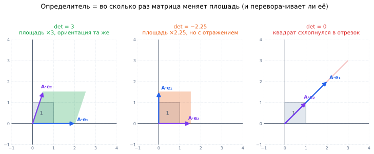
Серый квадрат единичной площади под действием матрицы превращается в цветную фигуру. Слева площадь выросла втрое, а базисные векторы сохранили взаимное расположение — определитель равен $+3$. В центре $A\cdot e_1$ смотрит вверх, а $A\cdot e_2$ вправо: они поменялись ролями, пространство отразилось — отсюда минус, $\det = -2.25$. Справа оба образа легли на одну прямую, площадь стала нулевой — это и есть $\det = 0$, вырожденный случай. Если $\det A=0$ (такая матрица называется вырожденной), то результат применения данной матрицы в качестве линейного оператора приведет к вырождению рассматриваемого пространства. Так, если применить вырожденную матрицу $2\times 2$ к плоскости $\mathbb{R}^2$, то она выродится в одну-единственную прямую.
Отсюда сразу видно, почему такая матрица необратима: разные точки плоскости слиплись в одну точку прямой, и восстановить, откуда именно пришла точка, невозможно — информация уничтожена безвозвратно. Обратного преобразования просто не существует.
Значение определителя показывает, по сколько раз растягивается (масштабируется) преобразуемое пространство: $\det A=3$ будет означать, что все единичные кубы в пространстве будут растянуты так, что их объем увеличится в 3 раза. Если $\det A = k < 0$, то пространство масштабируется в $|k|$ раз, но поменяет свою ориентацию.
Например, если рассмотреть снова пример с плоскостью, то при отрицательном определителе плоскость растянется (если $|\det A|>1$) или сожмется (если $|\det A|<1$) и при этом зеркально отразится: оси $x$ и $y$ поменяются местами.
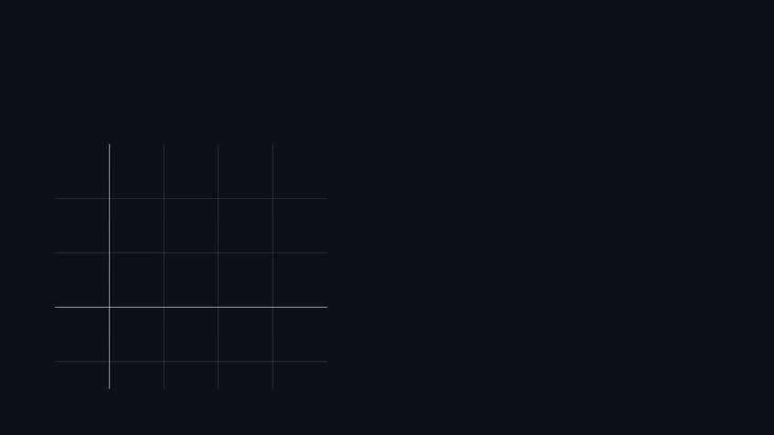
Три матрицы по очереди действуют на единичный квадрат. Растяжение: площадь параллелограмма равна $2.5$, ориентация базиса сохранена — $\det = 2.5$. Отражение: образы $e_1$ и $e_2$ поменялись местами, площадь $1.25$, но знак минус. Вырожденная матрица: квадрат схлопывается в отрезок, площадь и определитель равны нулю. - $\det(AB) = \det A \cdot \det B$
- $\det A = \det A^\top$
- При умножении строки (или столбца) на число $k$, определитель умножается на $k$
- Если две строки (или столбца) зависимы (выражаются друг через друга), то $\det A = 0$
- Если матрица треугольная (верхняя или нижняя), то определитель равен произведению диагональных элементов
Каждое из них становится очевидным, если помнить про объём:
- $\det(AB) = \det A \det B$ — применили два преобразования подряд, коэффициенты масштаба перемножились. Отсюда же следует $\det(A^{-1}) = 1/\det A$: обратное преобразование возвращает объём обратно.
- Зависимые строки $\Rightarrow$ ноль — векторы лежат в одной плоскости (или на одной прямой), а у плоской фигуры объём нулевой.
- Треугольная $\Rightarrow$ произведение диагонали — такое преобразование растягивает оси на $a_{11}, a_{22}, \dots$ и «скашивает» фигуру, а скос, как известно из школьной геометрии, площадь не меняет.
Соблазнительно решить, что маленький $\det A$ означает «матрица близка к вырожденной». Это неверно.
Возьмите диагональную матрицу $100\times100$ со всеми $d_i = 0.1$. Её определитель равен $10^{-100}$ — фантастически мал, — но матрица идеально обусловлена: она просто сжимает всё пространство в 10 раз по каждой оси и прекрасно обращается.
Причина в том, что определитель — это произведение всех коэффициентов растяжения, и оно катастрофически зависит от размерности. Правильная мера близости к вырожденности — число обусловленности $\kappa = \sigma_{\max}/\sigma_{\min}$. Именно поэтому в реальном коде вы почти никогда не увидите проверку
if det(A) == 0, зато увидитеnp.linalg.cond(A).Дисклеймер про все примеры ниже вычисления определителей руками: на практике это нигде не пригодится! Привожу чисто для интересующихся.
Библиотеки считают определитель не по этим формулам, а через LU-разложение за $O(n^3)$. Формула разложения по минорам требует $O(n!)$ операций: для матрицы $20\times20$ это больше, чем атомов в комнате. Но на собеседовании $2\times2$ и $3\times3$ спросить могут, поэтому пара примеров ниже всё же полезна.
Рассмотрим матрицу
$$A = \begin{bmatrix} 1 & 7 \\ 2 & 3 \end{bmatrix}$$
$$\det A = 1\cdot 3 - 2 \cdot 7 = -11$$
Общая формула: $\det \begin{bmatrix} a & b \\ c & d\end{bmatrix} = ad - bc$ — «произведение главной диагонали минус произведение побочной». Знак минус означает, что преобразование отражает плоскость, а модуль $11$ — что площади увеличиваются в 11 раз.
Рассмотрим матрицу
$$A = \begin{bmatrix} 1 & 0 & 3 \\ 10 & 2 & -6\\ 5 & 7 & 4 \end{bmatrix}$$
$$\det A = 1\cdot 2 \cdot 4 + 10 \cdot 7 \cdot 3 + 5 \cdot 0 \cdot (-6) - (5 \cdot 3 \cdot 2 + 1 \cdot (-6) \cdot 7 + 4 \cdot 10 \cdot 0) = 230$$
Это правило Саррюса: складываются три произведения вдоль диагоналей, идущих «вправо-вниз», и вычитаются три произведения вдоль диагоналей «влево-вниз». Работает только для матриц $3\times3$ — для $4\times4$ и больше оно неверно, и это классическая ловушка.
Рассмотрим ту же матрицу
$$A = \begin{bmatrix} 1 & 0 & 3 \\ 10 & 2 & -6\\ 5 & 7 & 4 \end{bmatrix}$$
$$\det A = 1 \cdot \begin{vmatrix} 2&-6\\ 7&4 \end{vmatrix} - 0 \cdot \begin{vmatrix} 10&-6\\ 5&4 \end{vmatrix}+3\cdot \begin{vmatrix} 10&2\\ 5&7 \end{vmatrix}=1\cdot50 + 3\cdot 60 = 50 + 180 = 230$$
То, что мы сделали, называется вычислением определителя матрицы через разложение по минорам. Это удобно для рекурсивного вычисления определителя больших матриц:
$$\det A = \sum_{j=1}^n (-1)^{i+j} a_{ij}M_{ij},$$
где $i$ — номер выбранной строки (часто берут первую: $i=1$), $a_{ij}$ — элемент на позиции $(i, j)$, $M_{ij}$ — минор — определитель матрицы, полученной из $A$ путём удаления строки $i$ и столбца $j$, $(-1)^{i + j}$ — коэффициент знака (учитывает чётность перестановок). Это называется разложением определителя по $i$-той строке.
Обратите внимание, что во втором слагаемом множитель $a_{12} = 0$ обнулил целый минор — считать его не пришлось.
Отсюда рабочее правило ручного счёта: раскладывать надо по той строке или столбцу, где больше нулей. А если нулей нет, их можно создать элементарными преобразованиями — прибавление кратного другой строки определитель не меняет.
Прямо — почти нигде, косвенно — в нескольких важных местах:
- Многомерное нормальное распределение: в его плотности стоит $\det \Sigma$ — определитель матрицы ковариаций. Он отвечает за «объём» облака данных и нужен для нормировки. Отсюда же и вездесущий $\log\det\Sigma$ в правдоподобии гауссовых моделей и GMM.
- Normalizing flows: чтобы обратимое преобразование корректно пересчитывало плотность вероятности, нужен якобиан — и в формуле стоит $\log|\det J|$. Архитектуры этого семейства (RealNVP, Glow) строятся так, чтобы этот определитель считался дёшево — например, треугольным якобианом.
- Проверка вырожденности — теоретически; на практике, как сказано выше, смотрят число обусловленности.
- Замена переменных в интегралах — фундамент, на котором стоят оба предыдущих пункта.
- Определитель определён только для квадратных матриц. У матрицы $3\times5$ его нет — есть сингулярные числа.
- $\det(A + B) \neq \det A + \det B$. Определитель ведёт себя хорошо относительно умножения, но не сложения.
- Правило Саррюса не работает для $4\times4$. Его применяют по инерции — и получают неверный ответ.
- Знак минора зависит от позиции. Множитель $(-1)^{i+j}$ даёт шахматный узор знаков; если о нём забыть, ответ будет неверным даже при правильно посчитанных минорах.
- $\det A = 0$ и «матрица маленькая» — не одно и то же. Ноль означает потерю измерения, а не малость чисел.
Что такое определитель матрицы? Для каких матриц он определён?
Скалярная величина $\det A$, вычисляемая только для квадратных матриц. Показывает, во сколько раз преобразование меняет объём и сохраняет ли оно ориентацию пространства.
Каков геометрический смысл определителя?
Модуль — коэффициент изменения площади (объёма) при линейном преобразовании: единичный квадрат переходит в параллелограмм площади $|\det A|$. Знак указывает на сохранение ($+$) или смену ($-$) ориентации, то есть на наличие отражения.
Что означает $\det A = 0$?
Матрица вырождена: преобразование «схлопывает» пространство в меньшую размерность, разные точки склеиваются, информация теряется. Поэтому такая матрица необратима, её строки линейно зависимы, а ранг меньше $n$.
Каков определитель треугольной матрицы?
Произведение диагональных элементов. Именно поэтому определитель на практике считают через LU-разложение: матрицу приводят к треугольному виду и перемножают диагональ.
Как определитель ведёт себя относительно произведения и обращения?
$\det(AB) = \det A \cdot \det B$ — коэффициенты масштаба перемножаются; отсюда $\det(A^{-1}) = 1/\det A$. Также $\det A^\top = \det A$. А вот для суммы никакого простого правила нет.
Можно ли по малому определителю судить о близости матрицы к вырожденной?
Нет. Определитель — произведение всех коэффициентов растяжения, и он экспоненциально зависит от размерности: у матрицы $100\times100$ с диагональю $0.1$ он равен $10^{-100}$, хотя матрица прекрасно обусловлена. Правильная мера — число обусловленности $\kappa = \sigma_{\max}/\sigma_{\min}$.
Где определитель реально используется в ML?
В плотности многомерного нормального распределения ($\det\Sigma$ и $\log\det\Sigma$ в правдоподобии гауссовых моделей и GMM) и в normalizing flows, где для пересчёта плотности нужен $\log|\det J|$ якобиана — ради дешёвого вычисления этого члена архитектуры проектируют с треугольным якобианом.
-
Собственные числа, собственные векторы
Формально, пусть $A$ — матрица, $v$ — произвольный вектор. Если после применения матрицы к вектору выходит, что он всего лишь масштабировался на множитель $\lambda$, то говорят, что $v$ — собственный вектор, а $\lambda$ — собственное число:
$$Av=\lambda v$$
При этом требуют $v \neq \vec{0}$: нулевой вектор подошёл бы под любое $\lambda$ и никакой информации не нёс бы.
Матрица обычно и поворачивает вектор, и растягивает его. Но у большинства матриц есть особые направления, вдоль которых поворота не происходит вовсе: вектор остаётся лежать на своей прямой, только становится длиннее или короче.
Такие направления и называются собственными, а $\lambda$ (лямбда) — коэффициент растяжения вдоль каждого из них. Слева в равенстве стоит сложная операция (умножение на матрицу), справа — простая (умножение на число). В этом вся суть: для собственных векторов матрица работает как обычное число.
Читать $\lambda$ можно так: $\lambda = 2$ — вдвое длиннее; $\lambda = 1$ — вообще ничего не изменилось; $\lambda = 0.5$ — вдвое короче; $\lambda = -1$ — та же длина, но развернулся на 180°; $\lambda = 0$ — вектор схлопнулся в точку.
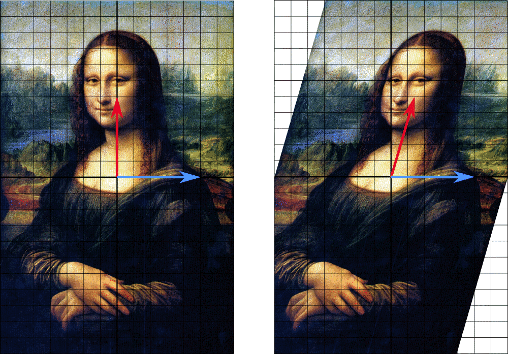
Давайте применим матрицу $A$ (это отображение) к изображению Джоконды Да Винчи. В этом отображении красная стрелка меняет направление, а синяя стрелка — нет. Синяя стрелка является собственным вектором этого отображения (матрицы $A$), поскольку она не меняет направления, а поскольку её длина не меняется, её собственное значение равно 1. Матрица $A$ деформирует всю сетку. Розовые векторы после умножения на $A$ поворачиваются, а зелёные — собственные — остаются на своих прямых: вдоль $(1,1)$ вектор растягивается в 3 раза ($\lambda_1 = 3$), вдоль $(1,-1)$ не меняется ($\lambda_2 = 1$). Это и есть $Av = \lambda v$. Спектр матрицы — это множество всех её собственных чисел.
Собственные векторы, отвечающие одному и тому же $\lambda$, вместе с нулевым вектором образуют подпространство — его называют собственным подпространством. Отсюда важное следствие: собственный вектор определён с точностью до масштаба. Если $v$ собственный, то и $5v$, и $-v$ тоже собственные с тем же $\lambda$. Поэтому в библиотеках их всегда возвращают нормированными до единичной длины.
Вычислять собственные числа можно так:
$$\det(A-\lambda E)=\left| \begin{array}{ccc} a_{11}-\lambda &\dots &a_{1n}\\ \vdots &\ddots &\vdots\\ a_{n1} &\dots &a_{nn}-\lambda\\ \end{array}\right|=b_1 \lambda^n + b_2 \lambda^{n-1} +\dots b_{n-1} \lambda + b_n=0$$
$b_1 \lambda^n + b_2 \lambda^{n-1} +\dots b_{n-1} \lambda + b_n=0$ — характеристический полином (многочлен), $\lambda_i$ — собственные числа, это корни (решения) характеристического полинома, $E$ — единичная диагональная матрица
$$E_{n\times n}=\left( \begin{array}{cccc} 1 & 0& \dots &0\\ 0& 1& \dots &0\\ \vdots& \vdots & \ddots & \vdots\\ 0 & 0& \dots &1\\ \end{array}\right)$$
Это не магия, а три строчки преобразований:
$$Av = \lambda v \;\Longrightarrow\; Av - \lambda v = \vec{0} \;\Longrightarrow\; (A - \lambda E)v = \vec{0}$$
Единичная матрица $E$ понадобилась только для того, чтобы вычесть число из матрицы стало законной операцией: $\lambda v = \lambda E v$.
Теперь ключевой шаг. Мы ищем ненулевой вектор $v$, который матрица $(A - \lambda E)$ обнуляет. Матрица может обнулить ненулевой вектор, только если она вырождена — иначе, будучи обратимой, она из ненулевого делала бы ненулевое. А вырожденность — это ровно $\det(A - \lambda E) = 0$.
Отсюда и рецепт: сначала найти все $\lambda$, при которых матрица вырождается, а потом для каждого из них решить систему $(A - \lambda E)v = \vec{0}$ и получить сами векторы.
Рассмотрим матрицу
$$A= \begin{bmatrix} 3&2&6\\ 2&2&5\\ -2&-1&-4 \end{bmatrix}$$
Найдем ее собственные числа и векторы. Вычислим характеристический многочлен:
$$f(\lambda)= \begin{vmatrix} 3-\lambda&2&6\\ 2&2-\lambda&5\\ -2&-1&-4-\lambda \end{vmatrix}= \lambda ^{3}-\lambda ^{2}-\lambda +1=(\lambda -1)^{2}(\lambda +1)=0$$
Значит, его корни $1$ (кратности 2) и $−1$.
Множитель $(\lambda - 1)^2$ говорит, что корень $\lambda = 1$ встречается дважды. Это называется алгебраической кратностью.
Отдельный вопрос — сколько независимых собственных векторов на самом деле отвечает этому числу (геометрическая кратность). Она может оказаться меньше: например, у матрицы $\begin{bmatrix} 1 & 1 \\ 0 & 1\end{bmatrix}$ число $\lambda = 1$ имеет кратность 2, а собственный вектор всего один. Такие матрицы называют недиагонализируемыми (дефектными) — базиса из собственных векторов у них не существует.
Хорошая новость: у симметричных матриц такого не бывает никогда, а в ML почти все интересные матрицы (ковариации, корреляции, гессиан, матрица Грама) симметричны.
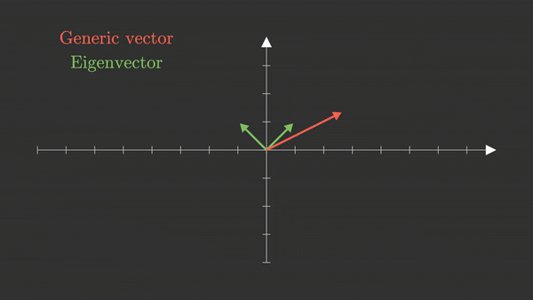
Собственные векторы и собственные значения матрицы $A$ — это векторы и числа, которые удовлетворяют уравнению $Av = \lambda v$. В этом примере мы видим, что собственные векторы (зеленые стрелки) не поворачиваются (только масштабируются), они остаются лежать на одной линии. Все другие векторы (для примера показан один такой вектор, красный) поворачиваются и/или масштабируются под действием матрицы $A$. Два соотношения позволяют проверить ответ, не пересчитывая всё заново:
$$\sum_i \lambda_i = \operatorname{tr}(A) \quad (\text{сумма диагональных элементов}), \qquad \prod_i \lambda_i = \det A$$
Например, для матрицы из примера выше: $\operatorname{tr}(A) = 3 + 2 - 4 = 1$, и сумма корней $1 + 1 - 1 = 1$ — сходится.
Отсюда же сразу видно: $\det A = 0$ тогда и только тогда, когда среди собственных чисел есть ноль. Ещё пара фактов: у треугольной (и диагональной) матрицы собственные числа стоят прямо на диагонали, а собственные числа $A^{-1}$ равны $1/\lambda_i$.
Характеристический полином — обычный многочлен степени $n$, и вещественных корней у него может не быть вовсе. Простейший пример: матрица поворота на 90°
$$R = \begin{bmatrix} 0 & -1 \\ 1 & 0 \end{bmatrix}$$
не оставляет на месте ни одного направления — что геометрически очевидно, ведь она поворачивает всё. Её собственные числа равны $\pm i$.
Практический вывод: у произвольной матрицы собственные числа могут быть комплексными, и базиса из собственных векторов может не существовать. Но по спектральной теореме у симметричной вещественной матрицы собственные числа всегда вещественны, а собственные векторы попарно ортогональны. Именно поэтому в ML работают преимущественно с симметричными матрицами — и
np.linalg.eigh(для симметричных) предпочитают более общемуnp.linalg.eig.Собственные числа и векторы на практике находят численными методами, например, степенным методом или QR-алгоритмом.
Через характеристический полином их не ищут никогда: уже для $n \geq 5$ корни многочлена не выражаются через радикалы (теорема Абеля), а численно поиск корней полинома чудовищно неустойчив. Ирония в том, что современные алгоритмы поиска корней многочлена, наоборот, сводят задачу к поиску собственных чисел специальной матрицы.
Собственные числа и вектора применяют в методе PCA.
Собственные векторы, соответствующие наибольшим собственным значениям, определяют направления максимальной дисперсии данных — главные компоненты. Проекция данных на эти направления позволяет уменьшить размерность с минимальной потерей информации. Этот метод называется методом главных компонент (PCA).
Разберём, почему так получается. Матрица ковариаций $\Sigma$ хранит, как признаки разбросаны и как связаны между собой. Дисперсия данных вдоль произвольного направления $\vec{u}$ (единичной длины) равна $\vec{u}^\top \Sigma \vec{u}$. Задача «найти направление максимального разброса» — это максимизация этой величины, и её решением оказывается собственный вектор с наибольшим $\lambda$. Само же $\lambda$ равно дисперсии вдоль этого направления.
Отсюда и практическое правило: доля объяснённой дисперсии первых $k$ компонент равна $\frac{\lambda_1 + \dots + \lambda_k}{\lambda_1 + \dots + \lambda_n}$. Смотрят на неё и оставляют столько компонент, чтобы набралось, скажем, 95%.
- PageRank: рейтинг страниц Google — собственный вектор матрицы переходов по ссылкам, отвечающий $\lambda = 1$.
- Спектральная кластеризация: разбиение графа на сообщества через собственные векторы матрицы Лапласа.
- Устойчивость обучения: собственные числа гессиана функции потерь описывают форму «оврага» вокруг минимума. Их отношение $\lambda_{\max}/\lambda_{\min}$ определяет, насколько тяжело градиентному спуску, а условие сходимости требует $\alpha < 2/\lambda_{\max}$ для learning rate.
- Взрыв и затухание градиентов в RNN: если наибольшее по модулю собственное число рекуррентной матрицы больше 1, градиент растёт экспоненциально по длине последовательности; если меньше 1 — затухает.
- Собственный вектор не единственный. Он определён с точностью до умножения на число, а знак вообще произволен:
np.linalg.eigможет вернуть $-v$ вместо $v$, и это не ошибка. Именно поэтому PCA-компоненты у двух реализаций могут отличаться знаком. - Собственные векторы разных $\lambda$ ортогональны не всегда — только у симметричных матриц. Для произвольной матрицы они просто линейно независимы.
- Нулевой вектор собственным не считается, хотя формально $A\vec{0} = \lambda\vec{0}$ верно при любом $\lambda$. А вот $\lambda = 0$ — вполне законное собственное число, и оно означает вырожденность матрицы.
- PCA нужно применять к отцентрированным данным. Если не вычесть среднее, первая «главная компонента» будет указывать на центр облака, а не на направление разброса. И масштабируйте признаки: без этого компоненту захватит признак, измеренный в самых крупных единицах.
Что такое собственный вектор и собственное число матрицы?
Ненулевой вектор $v$, который под действием $A$ не меняет направления, а только масштабируется: $Av = \lambda v$. Число $\lambda$ — коэффициент этого масштабирования. Собственный вектор определён с точностью до умножения на число.
Как найти собственные числа матрицы и откуда берётся это уравнение?
Решить характеристическое уравнение $\det(A - \lambda E) = 0$. Оно следует из $Av = \lambda v \Rightarrow (A - \lambda E)v = \vec{0}$: чтобы существовал ненулевой $v$, обнуляемый матрицей, эта матрица обязана быть вырожденной, то есть иметь нулевой определитель.
Что такое спектр матрицы?
Множество всех собственных чисел матрицы. Сумма собственных чисел равна следу $\operatorname{tr}(A)$, произведение — определителю $\det A$.
Могут ли собственные числа быть комплексными?
Да — например, у матрицы поворота на 90° они равны $\pm i$, ведь она не оставляет на месте ни одного вещественного направления. Но по спектральной теореме у симметричной вещественной матрицы все собственные числа вещественны, а собственные векторы ортогональны.
Как собственные числа связаны с определителем и обратимостью?
$\det A = \prod_i \lambda_i$, поэтому $\det A = 0$ тогда и только тогда, когда среди собственных чисел есть ноль. Наличие нулевого собственного числа равносильно вырожденности и необратимости матрицы.
Как собственные числа и векторы используются в PCA?
Собственные векторы матрицы ковариаций — это главные компоненты, направления максимального разброса данных; соответствующие $\lambda$ равны дисперсиям вдоль этих направлений. Доля объяснённой дисперсии первых $k$ компонент равна отношению суммы их $\lambda$ к сумме всех.
Считают ли собственные числа через характеристический полином на практике?
Нет. Используют численные методы — QR-алгоритм, степенной метод: при $n \geq 5$ корни многочлена не выражаются через радикалы, а численный поиск корней полинома крайне неустойчив.
-
SVD. Сингулярное Разложение Матрицы
Любую матрицу $F$ можно разложить в произведение трех других матриц:
$$F=U\Sigma V^T,$$
где
- $U$ — ортогональная матрица, столбцы которой — собственные векторы матрицы $FF^T$
- $V$ — ортогональная матрица, столбцы которой — собственные векторы матрицы $F^TF$
- $\Sigma$ — диагональная матрица: $\Sigma=\operatorname{diag}(\sqrt{\lambda_1}, \dots, \sqrt{\lambda_n})$, $\lambda_j\geq 0$ — собственные числа матриц $FF^T, F^TF$
Слово «любую» здесь — самое важное во всём определении. Не квадратную, не симметричную, не обратимую — любую: хоть $1000 \times 3$, хоть вырожденную, хоть нулевую. В этом принципиальное отличие SVD от разложения по собственным векторам, которое требует квадратной (а по-хорошему — симметричной) матрицы.
А сам смысл разложения такой: что бы матрица ни делала с пространством, это всегда сводится к трём простым действиям подряд:
- $V^\top$ — повернуть (ортогональная матрица — жёсткий поворот или отражение);
- $\Sigma$ — растянуть каждую ось на свой коэффициент (диагональная матрица только растягивает);
- $U$ — повернуть ещё раз.
Никаких других возможностей у линейного преобразования нет. Это очень сильное утверждение о том, как вообще устроена линейная алгебра.
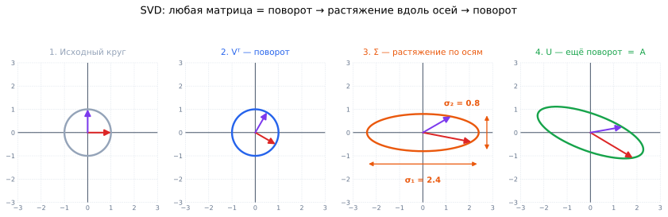
Единичный круг проходит через три стадии. $V^\top$ поворачивает его — круг остаётся кругом, меняются лишь отмеченные направления. $\Sigma$ растягивает оси на $\sigma_1 = 2.4$ и $\sigma_2 = 0.8$ — круг становится эллипсом с осями строго вдоль координатных. $U$ доворачивает эллипс до финального положения. Результат тот же, что от прямого умножения на $A$: любое линейное преобразование — это поворот, растяжение и ещё поворот. Диагональные элементы $\sigma_i = \sqrt{\lambda_i}$ называются сингулярными числами и всегда упорядочены по убыванию:
$$\sigma_1 \geq \sigma_2 \geq \dots \geq \sigma_r > 0$$
Простыми словами: $\sigma_i$ — это длины полуосей эллипсоида, в который матрица превращает единичный шар. Первое сингулярное число $\sigma_1$ — направление, вдоль которого матрица растягивает сильнее всего.
Число ненулевых $\sigma_i$ равно рангу матрицы. Отсюда и способ, которым
np.linalg.matrix_rankсчитает ранг на практике.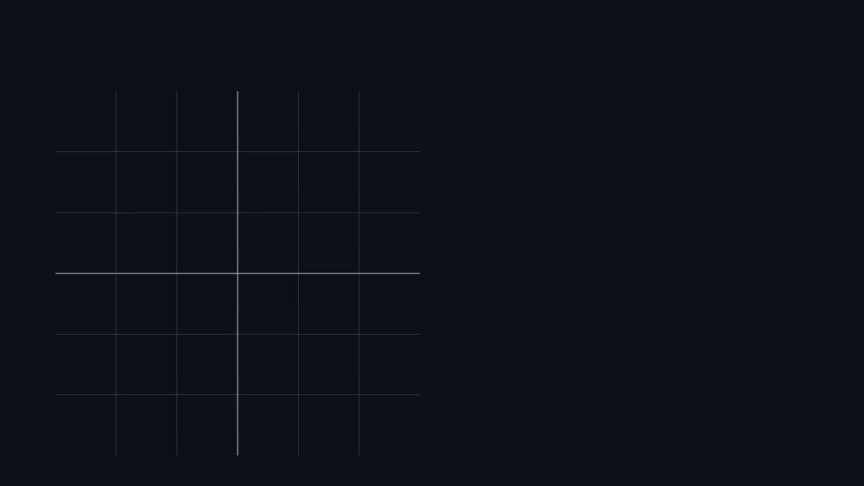
Единичный круг с правыми сингулярными векторами $v_1, v_2$ проходит три стадии: $V^\top$ поворачивает его так, что $v_1, v_2$ ложатся на оси; $\Sigma$ растягивает вдоль осей в $\sigma_1 = 2.56$ и $\sigma_2 = 0.98$ раз; $U$ доворачивает эллипс в конечное положение. Проверка в конце: прямое применение $A$ даёт тот же эллипс. Для $F \in \mathbb{R}^{n \times m}$ размеры сомножителей такие: $U \in \mathbb{R}^{n \times n}$, $\Sigma \in \mathbb{R}^{n \times m}$, $V^\top \in \mathbb{R}^{m \times m}$ — это полное (full) разложение.
Но если $n \gg m$ (типичная ситуация: 100 000 объектов, 50 признаков), матрица $U$ размера $100\,000 \times 100\,000$ просто не поместится в память, а её «лишние» столбцы всё равно умножаются на нули в $\Sigma$. Поэтому в коде почти всегда берут усечённое (reduced) разложение:
np.linalg.svd(A, full_matrices=False), где $U \in \mathbb{R}^{n \times k}$ и $\Sigma \in \mathbb{R}^{k \times k}$ при $k = \min(n, m)$.Визуализацию SVD можно посмотреть в этом видео.
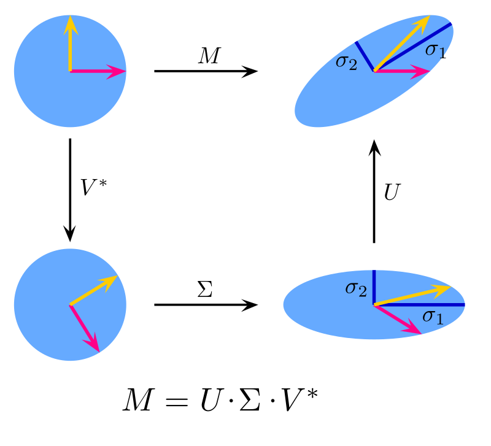
SVD разложение для матрицы $M$. Видно, что матрица $M$ разложена на три матрицы: $V^{*}$ (отвечает за поворот), $\Sigma$ (отвечает за масштабирование) и $U$ (отвечает за еще один поворот уже масштабированного круга). Стрелки показывают последовательность отображений: мы можем из исходного круга (сверху слева) получить эллипс (справа) двумя способами: либо применяя матрицу $M$ напрямую, либо сначала применяя матрицу $V^{*}$, затем $\Sigma$ и наконец $U$ — в произведении $M = U \Sigma V^{*}$ матрицы действуют на вектор справа налево. Определение говорит, что $U$ и $V$ собраны из собственных векторов матриц $FF^\top$ и $F^\top F$. Почему именно так?
Матрицы $FF^\top$ и $F^\top F$ симметричны при любой $F$ — а к симметричным применима спектральная теорема, гарантирующая вещественные собственные числа и ортогональный базис из собственных векторов. Кроме того, они неотрицательно определены, поэтому все $\lambda_i \geq 0$ и корень $\sqrt{\lambda_i}$ извлекается без проблем.
Проверить связь можно в одну строчку:
$$F^\top F = (U\Sigma V^\top)^\top (U\Sigma V^\top) = V\Sigma^\top U^\top U \Sigma V^\top = V \Sigma^2 V^\top$$
(здесь мы воспользовались тем, что $U^\top U = I$). Это в точности спектральное разложение симметричной матрицы: $V$ — её собственные векторы, а $\sigma_i^2$ — собственные числа.
Важная оговорка: в реальных вычислениях так SVD не считают. Явное построение $F^\top F$ возводит число обусловленности в квадрат и убивает точность; библиотеки используют алгоритмы, работающие с $F$ напрямую (двухдиагонализация Голуба — Кахана).
Есть вторая, не менее полезная запись того же разложения:
$$A = \sum_{i=1}^{r} \sigma_i \, u_i v_i^\top$$
где $u_i$ и $v_i$ — $i$-е столбцы матриц $U$ и $V$. Каждое слагаемое $u_i v_i^\top$ — матрица ранга 1, а $\sigma_i$ говорит, какой у неё вес.
Простыми словами: матрица разложена на «слои», отсортированные по важности. Первый слой несёт больше всего информации, последний — меньше всего. Именно эта запись объясняет, почему работает сжатие: достаточно оставить первые несколько слоёв.
Сингулярное разложение показывает "основные направления" в данных и раскладывает любую матрицу в произведение поворотов, масштабирования и еще одного поворота:
$$A = U\,\Sigma\,V^\top$$
- Сжатие и низкоранговая аппроксимация. Оставив первые $r$ наибольших сингулярных чисел, получаем матрицу ранга $r$ с минимальной ошибкой — компактное представление изображений, сигналов и др.
- Шумоподавление. Малые сингулярные числа обычно соответствуют шуму; их отсечение очищает данные без существенной потери структуры.
- Снижение размерности (PCA без ковариации). SVD от матрицы данных сразу даёт главные компоненты: столбцы $V$ — направления, $\sigma_i^2$ — дисперсии (с точностью до множителя $1/(n-1)$).
- Выделение скрытых признаков. Текст (LSA), рекомендации, ранжирование — SVD вытаскивает латентные "темы"/паттерны из матриц признаков.
Слова «с минимальной ошибкой» выше — не фигура речи, а теорема. Эккарта — Янга — Мирского: среди всех матриц ранга $r$ наилучшее приближение к $A$ (в норме Фробениуса и в спектральной норме) даёт именно усечённое SVD, а ошибка равна
$$\|A - A_r\|_F^2 = \sigma_{r+1}^2 + \sigma_{r+2}^2 + \dots$$
То есть ошибка в точности равна тому, что вы выбросили, и лучше уже не сделает никакой алгоритм. Это редкий случай, когда у задачи оптимизации есть точное решение в замкнутом виде — и именно поэтому SVD лежит в основе стольких методов.
Ещё одно важное применение: SVD даёт псевдообратную матрицу Мура — Пенроуза
$$A^+ = V\Sigma^+ U^\top$$
где $\Sigma^+$ получается заменой каждого ненулевого $\sigma_i$ на $1/\sigma_i$ и транспонированием. Она определена для любой матрицы, включая прямоугольные и вырожденные.
Решение задачи наименьших квадратов тогда записывается как $\mathbf{w} = A^+\mathbf{y}$ — и работает даже при мультиколлинеарности, когда формула $(X^\top X)^{-1}X^\top\mathbf{y}$ разваливается. Именно поэтому
sklearn.linear_model.LinearRegressionвнутри вызываетscipy.linalg.lstsq, которая основана на SVD, а не считает обратную матрицу в лоб.- SVD и спектральное разложение — разные вещи. Спектральное ($A = Q\Lambda Q^\top$) существует только для симметричных матриц, там одна матрица поворота и собственные числа могут быть отрицательными. SVD существует всегда, там два разных поворота, а сингулярные числа всегда неотрицательны. Совпадают они только для симметричных неотрицательно определённых матриц.
np.linalg.svdвозвращает $V^\top$, а не $V$. Классическая ошибка:U, s, Vt = np.linalg.svd(A)— третий элемент уже транспонирован, и восстанавливать матрицу нужно какU @ np.diag(s) @ Vt.- Второй элемент — вектор, а не матрица.
s— одномерный массив сингулярных чисел; чтобы получить $\Sigma$, нуженnp.diag(s). - PCA требует центрирования, SVD — нет. SVD раскладывает матрицу как есть. Если вы используете его вместо PCA, среднее нужно вычесть вручную, иначе первая компонента укажет на центр облака.
- Знаки столбцов $U$ и $V$ произвольны. Пара $(u_i, v_i)$ может быть возвращена с обоими перевёрнутыми знаками — произведение от этого не меняется. Сравнивать результаты двух реализаций «по числам» бессмысленно.
Запишите формулу SVD. Что представляют матрицы $U$, $\Sigma$, $V$?
$F = U\Sigma V^\top$. $U$ и $V$ — ортогональные матрицы (левые и правые сингулярные векторы), $\Sigma$ — диагональная с неотрицательными сингулярными числами, упорядоченными по убыванию.
Для каких матриц существует SVD?
Для любых, включая прямоугольные, вырожденные и нулевые. Это главное преимущество перед спектральным разложением, которое требует квадратной (а на практике симметричной) матрицы.
Каков геометрический смысл SVD?
Любое линейное преобразование = поворот ($V^\top$) + растяжение вдоль осей ($\Sigma$) + поворот ($U$). Единичный шар при этом превращается в эллипсоид, у которого длины полуосей равны сингулярным числам.
Как сингулярные числа связаны с собственными и с рангом?
$\sigma_i = \sqrt{\lambda_i}$, где $\lambda_i$ — собственные числа симметричных матриц $F^\top F$ и $FF^\top$ (они совпадают). Число ненулевых сингулярных чисел равно рангу матрицы, а их отношение $\sigma_{\max}/\sigma_{\min}$ — числу обусловленности.
Что утверждает теорема Эккарта — Янга?
Что усечённое SVD даёт наилучшее приближение матрицы среди всех матриц ранга $r$, а ошибка равна сумме квадратов отброшенных сингулярных чисел. Лучшего приближения заданного ранга не существует в принципе.
Для чего SVD используется в ML?
Сжатие данных и низкоранговая аппроксимация, шумоподавление, снижение размерности (PCA), выделение скрытых признаков (LSA, рекомендательные системы), устойчивое решение задачи наименьших квадратов через псевдообратную матрицу.
Как SVD связан с PCA?
SVD матрицы отцентрированных данных напрямую даёт главные компоненты: столбцы $V$ — направления, $\sigma_i^2/(n-1)$ — дисперсии вдоль них. Это устойчивее, чем строить матрицу ковариаций явно: возведение $X^\top X$ возводит в квадрат и число обусловленности, теряя точность.
-
Truncated SVD
Усеченный SVD — когда из сингулярных чисел остаются только первые $d$ штук, а остальные полагаются равными нулю:
$$\sigma_{d+1}, \sigma_{d+2}, \dots =0$$
Полное SVD ничего не теряет: перемножив три матрицы обратно, вы получите исходную $A$ до последнего знака. Пользы от такого разложения как от хранения — никакой, размер только вырос.
Truncated SVD — это шаг дальше: мы сознательно выбрасываем хвост. Сингулярные числа отсортированы по убыванию, значит в конце стоят самые маленькие — те, что вносят наименьший вклад. Оставляем первые $d$ и получаем матрицу, которая на исходную очень похожа, но занимает в разы меньше места.
Формально это наилучшее приближение матрицы рангом $d$ — по теореме Эккарта — Янга лучше не сделает никакой другой метод.
Значит, у матриц $U$ и $V$ остаются только первые $d$ столбцов, а матрица $\Sigma$ становится квадратной размером $d\times d$.
$$F'_{n\times m}=U'_{n\times d} \times \Sigma'_{d\times d} \times V_{d\times m}^{'T}$$
Считаем экономию: вместо $n \cdot m$ чисел храним $n d + d + d m = d(n + m + 1)$. Для матрицы $1000 \times 1000$ и $d = 50$ это $10^6$ против $\approx 10^5$ — в десять раз меньше.
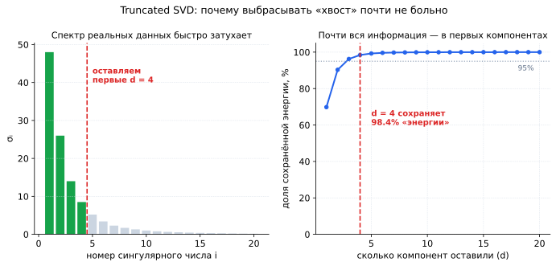
Слева — сингулярные числа реальной матрицы: первые несколько огромны, дальше идёт быстро затухающий хвост. Справа — сколько «энергии» (суммы квадратов сингулярных чисел) сохраняется при разном числе оставленных компонент: уже на $d = 4$ накоплено 98.4%. Именно из-за такой формы спектра выбрасывание хвоста почти не портит матрицу — и именно поэтому сжатие вообще работает. Число $d$ не берут с потолка. Стандартный критерий — доля сохранённой «энергии»:
$$\text{energy}(d) = \frac{\sum_{i=1}^{d}\sigma_i^2}{\sum_{i=1}^{r}\sigma_i^2}$$
Выбирают наименьшее $d$, при котором эта доля достигает нужного порога — обычно 90%, 95% или 99%. Это ровно та же величина, что в PCA называется «долей объяснённой дисперсии».
Второй распространённый приём — метод локтя: нарисовать сингулярные числа по убыванию и найти точку, где кривая резко выполаживается. До «локтя» — сигнал, после — шум.
Квадраты в формуле не случайны: по теореме Эккарта — Янга ошибка приближения равна $\|A - A_d\|_F^2 = \sum_{i>d}\sigma_i^2$, то есть в точности сумме квадратов выброшенных чисел.
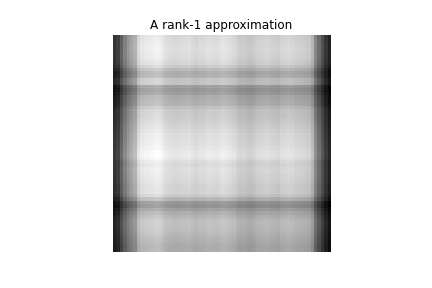
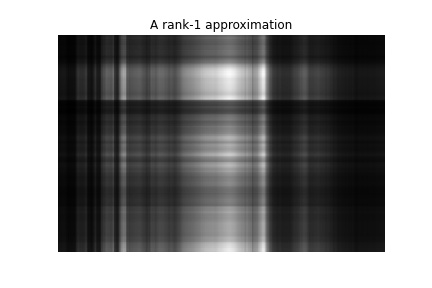
Возьмем матрицу $M$ (исходное изображение размера $64\times 64$) и разложим ее в произведение трех матриц: $U$, $\Sigma$ и $V^\top$. Будем варьировать ранг (количество столбцов и строк в матрицах $U, \Sigma, V^\top$), то есть просто будем усекать спектр матрицы $M$ (оставлять только $r$ самых больших): видим, что чем больше ранг, тем ближе к исходному изображению. Обратите внимание на порядок появления деталей. При $r = 1$ видны только самые крупные светлые и тёмные области. С ростом $r$ проступают контуры, потом черты, потом мелкая текстура.
Это и есть визуальное доказательство того, что сингулярные числа отсортированы по важности: первые компоненты несут «скелет» изображения, последние — мелкие детали и шум. И заодно объяснение, почему при $r \approx 20$ из 64 картинка уже почти неотличима от оригинала: остальные 44 компоненты вносят вместе меньше 1% энергии.
Классическое применение в NLP. Есть матрица «документы $\times$ слова» размера $100\,000 \times 50\,000$ — чудовищно большая и при этом почти целиком нулевая (в одном документе встречается пара сотен разных слов).
Truncated SVD с $d = 300$ сжимает её до двух матриц: $100\,000 \times 300$ (документы в пространстве тем) и $300 \times 50\,000$ (слова в пространстве тем). Каждая из 300 «компонент» ведёт себя как скрытая тема, а близкие по смыслу слова получают близкие векторы.
Побочный эффект оказывается главной ценностью: слова «машина» и «автомобиль» никогда не встречались в одном документе, и в исходной матрице их векторы ортогональны. Но после сжатия они попадают в одну тему и становятся близкими — модель «догадалась» о синонимии, которой в данных явно не было. Это и называется латентной семантикой.
В
sklearnесть классTruncatedSVD, и его главное отличие отPCAв том, что он не центрирует данные.Для разреженных матриц (TF-IDF, счётчики слов, one-hot) это принципиально: вычитание среднего превратило бы матрицу с 0.1% ненулевых элементов в плотную и мгновенно съело бы всю память.
TruncatedSVDработает с разреженным форматом напрямую.Практическое правило: плотные числовые признаки —
PCA; разреженные текстовые матрицы —TruncatedSVD(в задачах NLP этот пайплайн и называется LSA).Считать полное SVD ради первых 100 компонент матрицы $10^6 \times 10^5$ бессмысленно — это выброшенные впустую часы. Поэтому используют алгоритмы, которые сразу ищут только верхушку спектра:
- Ланцош / ARPACK (
scipy.sparse.linalg.svds) — итерационный метод, требующий лишь умножения матрицы на вектор; идеален для разреженных данных. - Рандомизированное SVD (
sklearn.utils.extmath.randomized_svd, оно же режим по умолчанию вTruncatedSVD) — проецирует матрицу на случайное подпространство небольшой размерности и считает SVD там. Работает за один-два прохода по данным и даёт точность, которой на практике более чем достаточно.
Оба выдают приближённый ответ, но выигрыш по времени — на порядки.
- Сжатие всегда с потерями. Восстановить исходную матрицу из усечённого разложения невозможно: выброшенная информация выброшена навсегда. Если данные нужны точно — Truncated SVD не подходит.
- Выигрыш есть не всегда. Хранение $d(n + m + 1)$ чисел выгоднее $nm$ только при достаточно малом $d$. При $d$, близком к $\min(n,m)$, вы будете хранить больше, чем исходную матрицу.
- Метод бесполезен на плоском спектре. Если сингулярные числа убывают медленно, отбрасывать нечего: любое $d$ даст большую ошибку. Всегда смотрите на график спектра перед тем, как выбирать $d$.
TruncatedSVDне центрирует данные — это не баг, а его назначение. Если вам нужен настоящий PCA на плотных данных, беритеPCA, иначе первая компонента укажет на среднее.- Не путайте с reduced SVD.
full_matrices=Falseпросто убирает заведомо ненужные столбцы и не теряет ни грамма информации. Truncated SVD выбрасывает информацию сознательно. Это разные вещи, хотя названия похожи.
Что такое Truncated SVD? Чем он отличается от полного SVD?
Оставляет только первые $d$ наибольших сингулярных чисел, остальные обнуляет — это низкоранговая аппроксимация матрицы. Полное SVD восстанавливает матрицу точно, усечённое — приближённо, зато занимает в разы меньше места.
Каков размер матриц $U'$, $\Sigma'$, $V'$ в Truncated SVD с рангом $d$?
$U' \in \mathbb{R}^{n \times d}$, $\Sigma' \in \mathbb{R}^{d \times d}$, $V'^\top \in \mathbb{R}^{d \times m}$. Вместо $nm$ чисел хранится $d(n + m + 1)$.
Почему усечение по малым сингулярным числам почти не портит матрицу?
Потому что у реальных данных спектр быстро затухает: первые компоненты несут почти всю «энергию», а хвост — мелкие детали и шум. По теореме Эккарта — Янга ошибка приближения равна сумме квадратов отброшенных сингулярных чисел, и она мала.
Как выбирают число компонент $d$?
По доле сохранённой энергии $\sum_{i\leq d}\sigma_i^2 / \sum_i \sigma_i^2$ с порогом 90–99%, либо методом локтя — по точке, где график сингулярных чисел выполаживается.
В каком смысле усечённое SVD оптимально?
По теореме Эккарта — Янга — Мирского это наилучшее приближение матрицы среди всех матриц ранга $d$ в норме Фробениуса и спектральной норме. Никакой другой метод не даст меньшей ошибки при том же ранге.
Чем
TruncatedSVDв sklearn отличается отPCA?Он не центрирует данные, поэтому умеет работать с разреженными матрицами (TF-IDF, счётчики), не превращая их в плотные. Для плотных числовых признаков используют
PCA, для текстовых разреженных —TruncatedSVD; последнее в NLP называется LSA.Как считают усечённое SVD для очень больших матриц?
Итерационными методами (Ланцош/ARPACK,
scipy.sparse.linalg.svds) или рандомизированным SVD, которое проецирует матрицу на случайное подпространство. Оба находят только верхние компоненты, не вычисляя полное разложение.
- Ланцош / ARPACK (